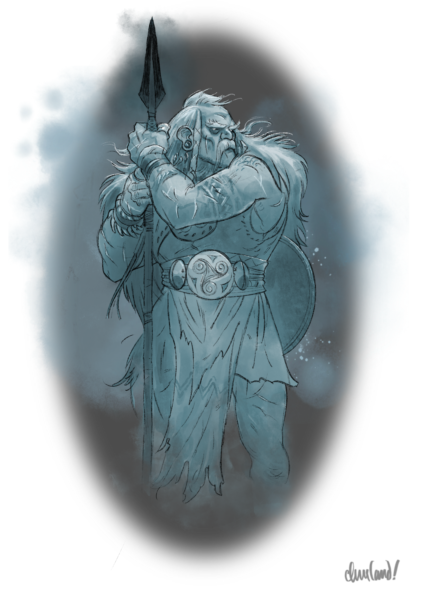
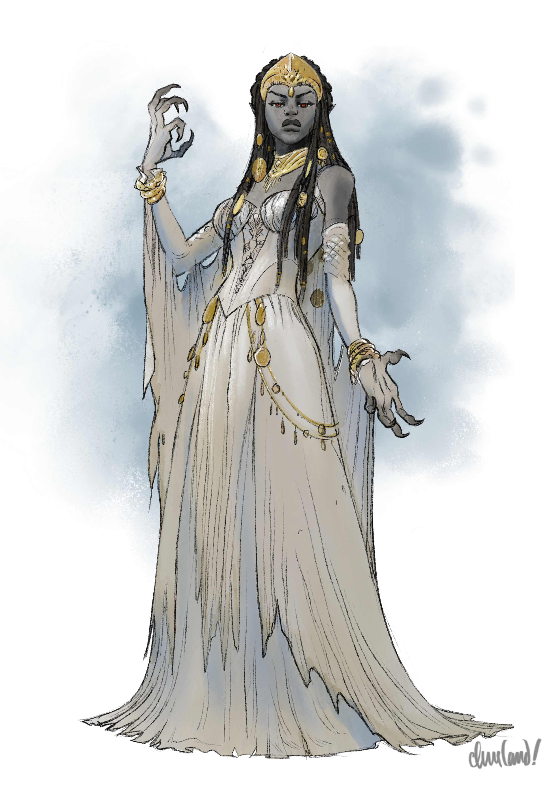
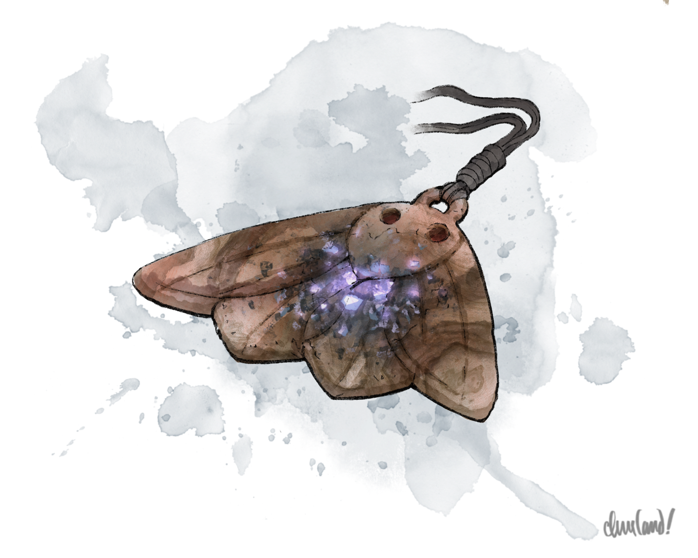
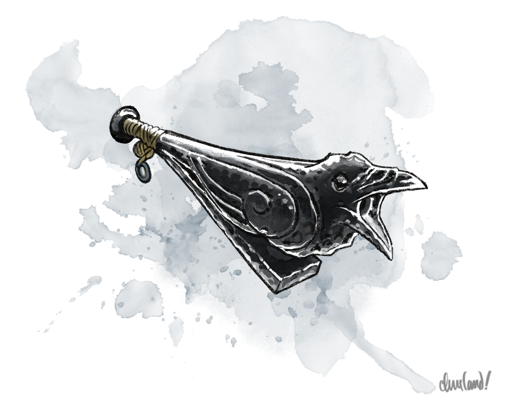

_Uma aventura para cinco personagens de 5º nível._
Neste arco, na primeira manhã após a primeira lua cheia dos jogadores em Barovia, eles são procurados por Urwin Martikov, que lhes pede para investigar uma misteriosa falta de entregas de vinho da vinícola Wizard of Wines, a sudoeste. Se os jogadores aceitarem a missão, Urwin pede que permitam que Muriel Vinshaw — uma funcionária da vinícola — os acompanhe na jornada. (Muriel é, claro, uma corvo-licantropo (wereraven) secreta e membro dos Keepers of the Feather, incumbida de levar notícia da profecia de Strahd a Davian Martikov, o líder da ordem.)
Antes de os jogadores partirem de Vallaki, Ireena Kolyana — inspirada pelos feitos deles na cidade e tomada de sombria determinação após seus encontros com Izek Strazni — pede que a deixem acompanhá-los em suas viagens, abrindo mão do refúgio de Vallaki por uma chance de se juntar à luta contra Strahd. Se os jogadores aceitarem o pedido, Ireena se junta ao grupo como companheira permanente pelo resto da campanha.
Ao chegarem ao Wizard of Wines, os jogadores conhecem Davian Martikov — o patriarca da família Martikov — e seus vários filhos e netos, que se abrigaram numa caverna escondida sob os bosques próximos. Davian conta que a vinícola foi invadida por um grupo de druidas conhecidos como os Forest Folk, ao lado de uma horda de criaturas vegetais retorcidas chamadas pragas (blights). Davian pede aos jogadores que derrotem os Forest Folk e quebrem o bordão que o líder deles usa para controlar as pragas, permitindo que os Martikov retomem seu lar.
Para isso, os jogadores precisam entrar na vinícola por um túnel secreto que leva à adega e, então, enfrentar os druidas e seus corrompidos servos vegetais. Os druidas, porém, estão cultivando uma muda da "árvore Gulthias" — uma árvore vampírica que cresce no alto de Yester Hill, ao sul — dentro das paredes da vinícola, o que complica os esforços dos jogadores para alcançar os andares superiores.
Caso os jogadores derrotem os druidas, descobrem que os Forest Folk planejam um ritual para invocar um ser chamado "Wintersplinter" em Yester Hill no dia seguinte — um ser que ameaça reduzir a vinícola a escombros. Davian pede que os jogadores e Muriel viajem até Yester Hill e impeçam o nascimento de Wintersplinter. Davian também pede que recuperem uma gema encantada que a vinícola usava para cultivar as uvas, antes de ser roubada pelos druidas.
Em Yester Hill, Muriel primeiro guia os jogadores até um bosque à sombra das Svalich Woods. Lá, ela invoca o espírito de Kavan, um antigo cacique dos Forest Folk, que fornece informações sobre os planos e as defesas dos druidas. Kavan adverte os jogadores de que Svarog, o líder dos druidas, é um inimigo poderoso, e os convida a retornar ao seu cairn caso derrotem Svarog e recuperem sua varinha de teixo.
Enquanto os jogadores prosseguem sua jornada até Yester Hill, são interceptados por Strahd von Zarovich montado em seu pesadelo (nightmare), Beucephalus. Caso os jogadores convençam Strahd a permitir que se oponham aos druidas, ele propõe uma aposta e oferece uma recompensa caso vençam, que os jogadores podem recolher no Whispering Wall, a oeste de Yester Hill, após a batalha.
Os jogadores precisam escalar Yester Hill sem alertar as patrulhas dos druidas, abrir caminho à força pelos guardiões do círculo de pedras no topo da colina e derrotar o círculo de druidas de Svarog antes que possam invocar Wintersplinter, uma temível praga arbórea (tree blight) que ameaça pôr cerco à vinícola Wizard of Wines. Se os jogadores tiverem êxito, podem obter a gema roubada dos Martikov do coração de Wintersplinter e acabar de uma vez com a ameaça dos Forest Folk.
Caso os jogadores encontrem Strahd no Whispering Wall, ele conta uma breve história do muro e os convida a se aventurar em suas profundezas enevoadas, onde podem enfrentar visões de seus desejos mais profundos. Antes de partir, Strahd entrega aos jogadores a recompensa prometida, além de presentes adicionais para cada personagem que entrou no Whispering Wall e de lá retornou.
Caso os jogadores voltem ao cairn de Kavan e lhe apresentem a varinha de Svarog, ele lhes conta a história do cisma entre os Forest Folk (que escolheram adorar Strahd) e os Mountain Folk (que desafiaram a autoridade de Strahd) há muito tempo. Kavan fala aos jogadores das Damas dos Fanes e os instrui a viajar até o assentamento oculto dos Mountain Folk, Soldav, no Tsolenka Pass, caso queiram encontrar um meio de reverter a corrupção da terra.
J1. The Blue Water Inn
J1a. O Pedido de Urwin
Na manhã seguinte à noite da primeira lua cheia dos jogadores em Barovia, se eles estiverem hospedados no Blue Water Inn, Urwin Martikov os procura com uma expressão de evidente preocupação.
Após as amenidades de praxe, Urwin pergunta, relutante (e em voz baixa), se estariam dispostos a ajudá-lo e a Danika com um problema que a estalagem enfrenta no momento. Se os jogadores concordarem, Urwin compartilha as seguintes informações:
- O Blue Water Inn costuma receber remessas regulares de vinho a cada quinzena, vindas do Wizard of Wines, situado no extremo sudoeste do vale de Barovia, incluindo tanto o popular Purple Grapemash No. 3 quanto o mais caro Red Dragon Crush.
- Contudo, a remessa desta quinzena está dois dias atrasada, e os estoques da estalagem começam a se esgotar. Urwin e Danika têm economias suficientes para que isso não seja um problema imediato, mas estão preocupados com o bem-estar da vinícola, da qual não se tem notícia desde que a última remessa chegou.
Urwin pede aos jogadores que viajem até o Wizard of Wines e falem com o dono, um homem chamado Davian Martikov, para descobrir o motivo do atraso e resolvê-lo, se necessário. (Se os jogadores apontarem o sobrenome de Davian, Urwin admite, sombrio, que Davian é seu pai, mas se recusa a elaborar, dizendo apenas que ele e o pai não se falam há muitos anos.) Urwin avisa aos jogadores que Davian é um "velho pássaro teimoso" e que seu pavio curto pode pôr a paciência deles à prova.
Urwin observa, no entanto, que a estalagem tem estoque de vinho suficiente para pelo menos alguns dias. Se os jogadores tiverem assuntos mais urgentes a tratar, ele não se importa que levem um ou dois dias a mais antes de partir.
Se os jogadores aceitarem a missão de Urwin, ele pede que se juntem a ele na cozinha do Blue Water Inn em uma hora, para conhecer Muriel Vinshaw, uma antiga funcionária do Wizard of Wines que pode levá-los até a vinícola. (Se perguntado, Urwin conta que Muriel tem assuntos próprios na vinícola e que ela também está preocupada com a segurança do lugar, mas se recusa a dar qualquer outra informação.)
Urwin acredita que algo terrível aconteceu com a vinícola — o quê, exatamente, ele não sabe. Embora tenha enviado meia dúzia de corvos para investigar quando a primeira entrega não apareceu, nenhum voltou.
Urwin sabe, graças a Muriel, que os strix de Baba Lysaga passaram recentemente a patrulhar o vale em maior número e com mais vigor. Embora Muriel tenha se oferecido para investigar, ele e ela concluíram que os céus provavelmente já não são seguros e que a melhor forma de ela seguir viagem é a pé, de preferência acompanhada de guarda-costas competentes.
J1b. A Partida
Conhecendo Muriel
Quando os jogadores encontram Urwin na cozinha do Blue Water Inn depois de aceitar a missão, ele os apresenta a Muriel Vinshaw. Leia:
Uma jovem se apoia no fogão, os braços cruzados. É baixa e de pele morena, com cabelos negros como azeviche e olhos escuros. Um manto manchado de lama pende de seus ombros, e uma pequena pena escura balança num cordão de couro em seu pescoço, entre duas contas de madeira entalhadas. Uma besta de madeira pende de um suporte em suas costas, e uma espada curta descansa embainhada em seu quadril.
A mão direita sobe até a cabeça, os dedos girando distraidamente a mecha azul-viva que corta seus cabelos. Ela abre um sorriso para vocês e estende a outra mão em cumprimento, os dedos crispados de energia inquieta.
 "Muriel Vinshaw" por Caleb Cleveland. Apoie-o no Patreon!
"Muriel Vinshaw" por Caleb Cleveland. Apoie-o no Patreon!
Informações de Interpretação Ressonância. Muriel deve inspirar afeição com sua atitude entusiasmada e destemida, diversão com seus comentários sarcásticos e seu humor alegre, e leve irritação com sua teimosia e suas recusas ocasionais (embora acompanhadas de desculpas) a revelar os segredos dos Keepers of the Feather.
Emoções. Muriel sente com mais frequência curiosidade, empolgação, determinação, triunfo, júbilo, diversão, raiva ou tristeza.
Motivações. Muriel quer honrar a vida de Elric por meio de sua resistência a Strahd e fazer diferença no cotidiano dos barovianos, atuando como agente de campo dos Keepers of the Feather.
Inspirações. Ao interpretar Muriel, canalize a Amethyst (Steven Universe), Sokka (Avatar: A Lenda de Aang) e Peter Parker (Homem-Aranha).
Informações do Personagem Persona. Para o mundo, Muriel é uma jovem alegre, ainda que ocasionalmente avoada. Para aqueles em quem confia, Muriel é uma determinada agente de campo dos Keepers of the Feather, com forte senso de justiça e um feroz espírito independente. Lá no fundo, Muriel ainda chora a morte de seu noivo, Elric Martikov, e se pergunta se algum dia vai consertar o que a morte dele quebrou dentro dela.
Moral. Numa briga, Muriel sacaria de bom grado sua espada curta ou sua besta e desafiaria o oponente a golpear primeiro, fugindo apenas se sua regeneração fosse bloqueada ou superada.
Relacionamentos. Muriel é agente dos Keepers of the Feather sob o comando de Davian Martikov, contato e aliada do mestre de espiões dos Keepers, Urwin Martikov, e foi noiva do falecido filho de Davian, Elric Martikov, que foi aprisionado enquanto ajudava a rebelião de Doru contra o Castelo Ravenloft.
Muriel cumprimenta os jogadores calorosamente e se apresenta, observando que Urwin lhe disse que ela os levará ao Wizard of Wines enquanto eles cuidam para que ela "não acabe morta". Depois da resposta deles, ela provoca os jogadores brevemente, sugerindo de brincadeira que eles "não parecem do tipo aventureiro". Se os jogadores contarem algum de seus feitos em Vallaki ou além, Muriel admite alegremente que eles de fato parecem bem equipados e bem preparados, e agradece por aceitarem o serviço.
Muriel é, claro, uma corvo-licantropo e membro secreta dos Keepers of the Feather — a mesma corvo-licantropo de asas azuis, aliás, que os jogadores já encontraram na vila de Barovia e no caminho para Tser Pool.
Se os jogadores confrontarem Muriel e sugerirem que ela é secretamente uma corvo-licantropo, druida ou outro tipo de metamorfo, ela zomba da ideia e nega sumariamente as acusações com uma boa dose de sarcasmo, risadas e humor bem-humorado, emendando uma série de desculpas enquanto isso:
- (Se acusada de ser uma metamorfa) "O quê, tipo uma druida abraçadora de árvores? Eu nem tenho um bordão de madeira. E eu odeio árvores."
- (Se acusada de ser uma corvo-licantropo) "Ah, tipo um lobisomem, só que de corvos? Isso é ridículo. 'Ah, olhem para mim, sou um lobisomem perigoso que vira passarinho!'"
- (Se apontarem a mecha azul em seu cabelo) "Uma vez eu vi um lobo com uma cara feia, mas isso não quer dizer que fosse o Izek Strazni disfarçado. Mas bom gosto o do passarinho, hein."
- (Se os jogadores insistirem que Muriel era o corvo de asas azuis) "Acreditem no que quiserem. Mas se eu pegar vocês escondendo alpiste nas minhas rações, aí a gente vai ter um problema."
Se os jogadores apresentarem provas irrefutáveis de sua suspeita (como a estranha capacidade de Muriel de se regenerar dos ferimentos), ela faz uma careta e insiste que não pode dizer mais nada sem antes falar com sua "chefia". (Ela não revela a identidade do chefe, mas pode prometer com sinceridade que não se trata de Strahd nem de um de seus servos.)
Muriel Vinshaw
Humanoide Médio (humano, metamorfo), caótico e bomClasse de Armadura 14 (armadura de couro)
Pontos de Vida 63 (14d8)
Deslocamento 9 m (voo 15 m nas formas de corvo e híbrida)
| FOR | DES | CON | INT | SAB | CAR |
|---|---|---|---|---|---|
| 10 (+0) | 16 (+3) | 11 (+0) | 13 (+1) | 15 (+2) | 14 (+2) |
Perícias Intuição +4, Percepção +6
Sentidos Percepção passiva 16
Idiomas Comum (não pode falar na forma de corvo)
Nível de Desafio 2
Bônus de Proficiência +2
Regeneração. Muriel recupera 10 pontos de vida no início de seu turno se não tiver sofrido dano necrótico ou dano de concussão, perfurante ou cortante de uma arma prateada desde seu último turno. Ela só morre se começar o turno com 0 pontos de vida e não se regenerar.
Imitar. Muriel pode imitar sons simples que já tenha ouvido, como uma pessoa sussurrando, um bebê chorando ou um animal chilreando. Uma criatura que ouça os sons pode perceber que são imitações com um teste de Sabedoria (Intuição) CD 10 bem-sucedido.
Mergulho. Se Muriel voar pelo menos 6 metros em linha reta na direção de um alvo enquanto desce pelo menos 1,5 metro em direção ao solo e, então, atingir esse alvo com um ataque de espada curta no mesmo turno, o alvo sofre 7 (2d6) de dano perfurante adicional. Se o alvo for uma criatura, ele deve ser bem-sucedido num teste de resistência de Força CD 12 ou fica caído.
Ações
Ataque Múltiplo. Muriel faz dois ataques com arma, um dos quais pode ser com sua besta de mão.
Espada Curta. (Apenas nas Formas Humanoide ou Híbrida) Ataque com Arma Corpo a Corpo: +5 para acertar, alcance 1,5 m, um alvo. Acerto: 6 (1d6 + 3) de dano perfurante.
Besta de Mão. (Apenas nas Formas Humanoide ou Híbrida) Ataque com Arma à Distância: +5 para acertar, alcance 9/36 m, um alvo. Acerto: 5 (1d6 + 3) de dano perfurante.
Bico. (Apenas nas Formas de Corvo ou Híbrida) Ataque com Arma Corpo a Corpo: +5 para acertar, alcance 1,5 m, um alvo. Acerto: 1 de dano perfurante na forma de corvo, ou 5 (1d4 + 3) de dano perfurante na forma híbrida. Se o alvo for um humanoide, ele deve ser bem-sucedido num teste de resistência de Constituição CD 10 ou é amaldiçoado com a licantropia de corvo-licantropo.
Ações Bônus
Metamorfose. Muriel se transforma em um híbrido de corvo e humanoide, em um corvo, ou de volta em sua forma humana. Suas estatísticas, exceto seu tamanho, são as mesmas em cada forma. Qualquer equipamento que ela esteja vestindo ou carregando não é transformado. Ela reverte à forma humana se morrer.
Reações
Interpor-se. Quando uma criatura que Muriel possa ver atinge com um ataque outro alvo a até 1,5 metro de Muriel, ela pode usar sua reação para sofrer o dano em seu lugar.
O Pedido de Ireena
Antes de os jogadores partirem do Blue Water Inn, se eles tiverem tratado Ireena Kolyana com gentileza e respeito, ela entra no salão da estalagem para encontrá-los — outra vez portando seu florete e seu peitoral.
Ireena, que soube do destino dos jogadores por Danika, pelo Padre Petrovich ou por algum outro vallakiano amistoso com ligações com os Martikov, primeiro confirma que os jogadores estão deixando Vallaki para investigar o Wizard of Wines. Feito isso, ela lhes pede a oportunidade de acompanhá-los — de viajar ao lado deles em sua luta para socorrer Barovia e desafiar a vontade de Strahd. Ela pode compartilhar as seguintes informações para explicar sua decisão:
- Ireena conta que, depois de ver os feitos dos jogadores em Vallaki, percebeu a importância de lutar pelos outros, em vez de simplesmente falar por eles. Ela quer aprender a ser uma guerreira para o seu povo e resistir diretamente à tirania de Strahd — sem medo nem hesitação.
- Se Ireena foi perseguida ou sequestrada por Izek Strazni no Ato H: Os Irmãos Strazni, ela conta que está cansada de se esconder daqueles que querem usá-la para os próprios fins, e que não aceita mais que outros se machuquem tentando protegê-la. Está determinada a se sustentar sobre as próprias pernas e a travar as próprias batalhas, em vez de deixar que outros as travem por ela.
- Ireena observa que a Igreja de St. Andral já foi alvo dos servos de Strahd uma vez — e que, embora Ismark a tenha mandado para Vallaki na esperança de que ficasse fora do alcance de Strahd, o que viveu ali lhe mostrou que nenhum lugar no vale é verdadeiramente seguro.
Se os jogadores demonstrarem preocupação com a segurança de Ireena, ela ressalta que, ao longo de todas as viagens deles, nenhum servo ou lacaio de Strahd ousou atacá-la, o que sugere que ele ordenou que a deixassem ilesa.
Se os jogadores sugerirem que Ireena não está preparada para uma vida de aventuras, ela ressalta que é uma curandeira treinada (graças aos ensinamentos da mãe); que é uma espadachim competente (graças ao treinamento de Ismark); e que ainda pode ajudá-los servindo de intermediária e compartilhando informações sobre o vale.
Se os jogadores sugerirem que a presença de Ireena atrairá a atenção de Strahd ou lhes trará azar, ela se enrijece e pergunta baixinho se eles realmente desejam mandá-la embora, como Ismark fez. Se repetirem a recusa, ela aceita a decisão.
J2. A Velha Estrada Svalich
A viagem da cidade de Vallaki até a vinícola Wizard of Wines tem pouco menos de onze quilômetros e leva duas horas e quinze minutos. Para chegar à vinícola, os jogadores precisam viajar até a Encruzilhada do Rio Raven e, então, seguir para o sul.
J2a. Atravessando o Rio
Quando os jogadores cruzarem a ponte sobre o Rio Luna, leia o seguinte:
A trilha se estreita, ladeada por árvores densas e altíssimas. Mais adiante, surge à vista uma velha ponte de madeira, cujas tábuas desgastadas pelo tempo cruzam o rio revolto lá embaixo. Ao se aproximarem, vocês veem a água escura tombando sobre as pedras lisas do leito, cercada de ambos os lados por arbustos e árvores retorcidos.
Quando pisam na ponte, suas botas ecoam contra a madeira velha e úmida. Ao norte, vocês veem o rio serpentear correnteza acima ao redor da linha das árvores antes de sumir numa curva. Ao sul, o rio ondula como uma fita entre suas margens e, aos poucos, desaparece na névoa.
A Encruzilhada do Rio Luna é como descrita em P. Luna River Crossroads (p. 40). Contudo, não role encontro aleatório quando os jogadores chegarem a esta área.
Quando os jogadores passam por ele, o caminho para Argynvostholt é em grande parte como descrito em Approaching the Mansion (p. 130). Leia:
Uma trilha de terra se desvia da Velha Estrada Svalich aqui, serpenteando para o sul por um esporão rochoso da montanha. A terra do caminho é dura e compactada, de uma cor cinza-amarronzada e pálida que lembra cinzas frias. As árvores de ambos os lados permanecem silenciosas e estoicas, com folhas de um verde desbotado. Conforme a trilha sobe, acaba dando lugar às sombras profundas da encosta arborizada da montanha, sumindo na penumbra do bosque além.
J2b. O Caminho para o Tsolenka Pass
Pouco antes de chegarem à Encruzilhada do Rio Raven, os jogadores topam com o caminho para o Lago Baratok e para o Chapter 11: Van Richten’s Tower (p. 167), não muito longe da trilha que leva ao Chapter 9: Tsolenka Pass (p. 157). Leia:
Uma velha trilha de caça se desprende da Velha Estrada Svalich aqui, serpenteando para o norte entre árvores velhas e retorcidas antes de sumir no matagal. Uns noventa metros adiante, um caminho alpino se separa da estrada principal e ruma para o sul, na direção das montanhas, ganhando altitude até desaparecer atrás de uma escarpa íngreme e coberta de árvores.
Quando os jogadores passam pela entrada do caminho alpino, são observados por uma berserker dos Mountain Folk escondida no matagal ao sul. Leia:
Vocês ouvem um graveto estalar no matagal ao sul.
Se os jogadores investigarem, podem fazer um teste de Sabedoria (Percepção) CD 11 para discernir uma silhueta de forma humana em meio à linha das árvores além. Se os jogadores se aproximarem, chamarem ou de outro modo tentarem interagir com a silhueta, leia:
Vocês assustam uma mulher de ombros largos, vestida em peles grossas e cobertas de lama, empunhando um machado de pedra. Ornamentos de obsidiana pendem de suas orelhas e de seu pescoço, e uma fina camada de lama cinzenta está espalhada por seu rosto, confundindo-a com as árvores escuras ao redor.
A mulher tenta imediatamente fugir mata adentro. Se os jogadores tentarem detê-la ou atacá-la, Muriel avisa que a mulher é uma dos Mountain Folk — uma tribo de caçadores-coletores que vive nas Montanhas Balinok — e que esse povo não serve a Strahd nem é perigoso, a menos que atacado.
Muriel não sabe por que a mulher vigiava a estrada, mas conta que os Mountain Folk têm andado mais ativos ultimamente, ainda que ninguém saiba bem o motivo. Os relatos sugerem, porém, que estão procurando alguma coisa. (Se perguntada como sabe tanto sobre os Mountain Folk, Muriel ri e afirma apenas que é bem viajada e tem "muitos amigos" pelo vale.)
Se os jogadores perguntarem a Muriel sobre o druida dos Forest Folk que viram na Velha Estrada Svalich em Arco H - A Alma Perdida, ela conta que os Forest Folk são conhecidos por serem servos leais de Strahd, a quem adoram como uma divindade. Ela aconselha os jogadores a manter distância do covil dos druidas: um outeiro em terraços chamado Yester Hill, no canto sudoeste das Svalich Woods, ao sul do Wizard of Wines.
J2c. A Encruzilhada do Rio Raven
A Encruzilhada do Rio Raven é em grande parte como descrita em R. Raven River Crossroads (p. 40). Contudo, não role encontro aleatório quando os jogadores chegarem a esta área. Além disso, acrescente o seguinte texto ao fim da descrição da área:
Uma figura envolta em armadura enferrujada está sozinha sobre a ponte, segurando uma espada longa reluzente em suas mãos pálidas.
A figura é reconhecidamente parecida com o revenante que monta guarda em Tser Falls. Se abordada, saúda os jogadores e pergunta qual é o destino deles.
Se os jogadores disserem ao revenante que estão viajando para o Wizard of Wines, ele os adverte de que os Forest Folk de Yester Hill andam cada vez mais agitados e de que se juntaram a eles os filhos da Árvore Gulthias — uma casca retorcida que cresce no topo de Yester Hill e dá à luz "pragas" que rastejam para fora de suas raízes nodosas. O revenante os aconselha a tomar cuidado com as pragas, que enxergam sem olhos e se disfarçam em meio à flora das terras selvagens.
Se os jogadores perguntarem ao revenante sobre os Mountain Folk ou os Forest Folk, ele conta apenas que o "Primeiro Povo" se dividiu há muito tempo diante da tragédia e da discórdia, e que seus descendentes permaneceram separados desde então. Observa que os Forest Folk acolheram Strahd von Zarovich como seu senhor e soberano, mas que os Mountain Folk ainda seguem os velhos costumes, adorando antigas deusas que outrora habitaram o vale. (O revenante não sabe onde vivem os Mountain Folk, mas ouviu dizer que o assentamento deles está escondido em algum ponto das montanhas.)
Se as armas dos jogadores estiverem claramente à vista, ele lhes pergunta se se opõem ao senhor do Castelo Ravenloft. Se os jogadores afirmarem que se opõem a Strahd, o revenante os aconselha a viajar até Argynvostholt, a sudeste, onde Sir Godfrey Gwilym aguarda aqueles que ergueriam suas espadas contra a escuridão que espreita nas profundezas do castelo. Se os jogadores pedirem indicações para chegar a Argynvostholt, o revenante os aconselha a seguir "para leste, e depois para o sul pela trilha cinza-cinzas".
O revenante não abandonará seu posto na ponte sob nenhuma circunstância.
J2d. A Armadilha de Fosso com Estacas
Enquanto os jogadores seguem para o sul a partir da Encruzilhada do Rio Raven, leia:
Conforme a estrada de terra serpenteia pela mata, o caminho se estreita, emoldurado por árvores antigas e retorcidas cujos galhos nodosos formam um dossel espesso sobre suas cabeças. Uma luz cinzenta e salpicada luta para atravessá-lo, lançando sombras inquietantes que tremulam e dançam à menor brisa. Um aroma almiscarado e terroso enche o ar — o cheiro de folhas apodrecendo, de solo úmido e o leve travo da decomposição.
A vegetação aqui é mais densa do que na estrada principal, e vários galhos baixos estão cobertos por tufos de trepadeiras que tecem uma tapeçaria emaranhada sobre a vegetação rasteira. Um grosso tapete de gravetos e agulhas de pinheiro estala sob suas botas, e esse som abafado é o único ruído em toda a trilha silenciosa.
Quando os jogadores entram nesta área, Muriel sussurra que algo não está certo, observando que a estrada "não cheirava a morte" da última vez em que ela passou por aqui.
A estrada aqui esconde uma armadilha de fosso com estacas (Dungeon Master's Guide, p. 122), dissimulada como descrito em False Trail (p. 30). Os tufos de trepadeiras (e a fonte do cheiro de decomposição) são cinco pragas de vinhas, ocultas pelo uso de sua característica aparência falsa.
Um personagem com Percepção passiva de Sabedoria 15 ou superior, ou que seja bem-sucedido num teste de Sabedoria (Percepção) CD 15, avista o fosso. Se algum jogador cair no fosso, tentar contorná-lo ou atacar as pragas de vinhas, as pragas atacam. Qualquer personagem que ainda não tenha reconhecido os tufos de trepadeiras como uma ameaça está surpreso.
Em combate, as pragas de vinhas usam seu ataque de constrição para agarrar inimigos antes de arrastá-los para dentro do fosso.
Nível do Combate: Brando Nível Esperado dos Personagens: 5 Aliados: Muriel Vinshaw (ND 1) e Ireena Kolyana (ND 2) Consumo Esperado de PV: 10%
Inimigos:
| 3 Jogadores | 4 Jogadores | 5 Jogadores | 6 Jogadores | |
|---|---|---|---|---|
| Praga de Vinhas | 3 | 4 | 5 | 6 |
J2e. O Monumento da Caçadora
Quando os jogadores seguem adiante, passando da armadilha de fosso, leia:
A estrada continua, curvando-se de novo enquanto as árvores começam a recuar do caminho. Não muito longe da estrada, em meio a um pequeno bosque de arbustos carregados de frutinhas, ergue-se uma velha estela de pedra com pouco menos de um metro e oitenta de altura. Ela se assenta dentro de um círculo de paralelepípedos velhos e rachados, e parece trazer algum tipo de entalhe.
Se os jogadores decidirem investigar a laje, descobrem que ela traz o entalhe de um lobo sobre uma estrela de três pontas gravada. (A laje é um antigo monumento à Caçadora, e a estrela de três pontas é o símbolo das Três Damas. Diferentemente das outras três lajes de Barovia, não há líquen nem musgo neste monumento, que costuma ser bem cuidado pelos Martikov. Embora os Martikov não se lembrem dos nomes nem da natureza das Damas dos Fanes, eles mantêm um profundo respeito pelos antigos deuses de Barovia.)
J3. The Wizard of Wines
O último trecho da viagem até o Wizard of Wines é em grande parte como descrito em Approaching the Vineyard (p. 174). Se Muriel estiver com o grupo, ela reconhece o manto do homem como sendo de Davian Martikov e insiste para que os jogadores vão ao encontro dele.
Há muito tempo, antes de Strahd von Zarovich conquistar o vale pela primeira vez, as tribos do Primeiro Povo foram brutalmente unificadas quando Kavan, o Bebedor de Sangue, um jovem cacique, destruiu a hierarquia da casta druídica e travou uma guerra sangrenta contra seus vizinhos.
Os servos da Buscadora — um clã de corvos-licantropos — temiam a conquista de Kavan. Para proteger o poder das Três Damas da ambição dele, os corvos-licantropos roubaram as três gemas doadoras de vida de seus lugares nos Fanes e as esconderam.
Séculos depois, os descendentes desses corvos-licantropos — a família Martikov — usariam essas gemas para fundar a Wizard of Wines Winery, ocultando seu poder abundante bem diante dos olhos de todos. Mesmo quando Strahd conquistou o vale e concedeu a vinícola à família Krezkov como recompensa por sua lealdade, poucas gerações se passaram antes que os Martikov se casassem com a linhagem Krezkov e retomassem a posse por meio de herança.
Cem anos atrás, um corvo-licantropo chamado Livius Martikov — avô de Davian Martikov — desafiou a vontade da família e ajudou o Burgomestre Ismark Antonovich e a paladina Lugdana a roubar o Sigil of the Sun (hoje chamado de Holy Symbol of Ravenkind) e o Tome of Strahd do Castelo Ravenloft enquanto Strahd dormia.
Livius aventurou-se com Ismark e Lugdana por quase uma década depois disso, farejando perigos e espionando seus inimigos. Quando finalmente se aposentou da vida de aventuras, usou a riqueza e a notoriedade conquistadas para fundar os Keepers of the Feather, uma sociedade secreta de corvos-licantropos dedicada a se opor às forças das trevas por toda a Barovia. Embora os Keepers não fossem eles próprios entrar na briga, juraram servir, guiar e abrigar quaisquer heróis que um dia se erguessem em memória de Lugdana.
Dez anos atrás, Madame Eva — auxiliada pelo rocho do Monte Ghakis disfarçado de corvo comum — roubou uma das três gemas encantadas da vinícola. Davian culpou seu filho, Urwin, como descrito em Chapter 12: The Wizard of Wines (p. 173). Urwin disse a Davian que vira um corvo levando a gema embora noite adentro — alegação que Davian descartou como absurda, porque os Keepers conheciam e comandavam todos os corvos do vale. Após uma discussão furiosa, Urwin e sua prometida, Danika Dorakova, partiram para Vallaki na manhã seguinte, para nunca mais voltar.
Há pouco mais de três meses, quando os corvos souberam da rebelião que Doru fermentava, o corvo-licantropo Elric Martikov — um dos filhos mais novos de Davian e irmão gêmeo de Elvir Martikov — decidiu que lutaria ao lado deles. Davian, porém, o proibiu.
Seguiu-se uma briga, e um Davian enfurecido baniu Elric da vinícola por sua insubordinação. Elric pereceu no Castelo Ravenloft pouco tempo depois.
Ludmilla Vilisevic e o coven de bruxas do Castelo Ravenloft encontraram o corpo despedaçado de Elric logo em seguida. Levaram o cadáver a Baba Lysaga, a bruxa de Berez, cujas magias de vidência (scrying) e cuja magia ritual logo revelaram a origem do flagelo dos corvos-licantropos: a vinícola Wizard of Wines, a oeste.
Enquanto Baba Lysaga se punha a criar strix maiores e menores para patrulhar os céus atrás dos Keepers e de seus servos corvos, Ludmilla firmou um acordo com os druidas de Yester Hill para auxiliá-la em sua trama contra os Keepers. Ludmilla ensinou os druidas a extrair mudas da Árvore Gulthias no topo de Yester Hill, que eles usaram para comandar as pragas que a árvore produzia.
Desde então, os espantalhos de Baba Lysaga atacaram a vinícola repetidas vezes. Numa dessas ocasiões, Ludmilla detectou a presença das duas gemas mágicas restantes. Três semanas atrás, durante um desses ataques, os espantalhos encontraram uma das gemas, desenterraram-na e a levaram às pressas para Baba Lysaga, em Berez.
Cinco dias atrás, os druidas de Yester Hill encontraram a segunda gema e a roubaram. Os corvos-licantropos lançaram um contra-ataque como descrito em Chapter 12: The Wizard of Wines (p. 173), mas não conseguiram superar os druidas e suas defesas. Três dias atrás, os druidas marcharam sobre a vinícola com um pequeno exército de pragas corrompidas e expulsaram os Martikov.
Os druidas permanecem na vinícola desde então, à procura da terceira gema, que acreditam estar escondida ali. Também plantaram uma muda da Árvore Gulthias dentro da vinícola, que pretendem usar para estender seu alcance rumo ao norte, na direção de Krezk. Em breve, porém, os druidas desistirão da busca — e a praga arbórea Wintersplinter marchará sobre a vinícola e a destruirá de uma vez por todas.
Se os jogadores demorarem na estrada, um guincho penetrante rasga o ar vindo do sul — o chamado familiar de um strix maior. Um instante depois, ele é respondido por um segundo chamado semelhante vindo do leste — e por um terceiro, igual, vindo do oeste. Enquanto os três guinchos ecoam pelo vinhedo, a figura encapuzada olha para cima e seus gestos se tornam mais urgentes, enquanto Muriel insiste para que os jogadores procurem abrigo.
Se os jogadores se aproximarem da figura encapuzada, ela lhes faz sinal para que a sigam mata adentro. Leia:
A figura desaparece num pequeno bosque de faias escondido em meio à mata, cujos troncos lisos e cinza-prateados formam um círculo, como sentinelas ancestrais. O dossel acima forma um teto denso e quase ininterrupto de folhagem, mergulhando o chão da floresta numa sombra de outro mundo.
Ao redor de vocês, os galhos uniformes e quase simétricos das árvores se estendem para cima como braços esguios rumo ao céu. Dezenas de corvos estão empoleirados neles, seus olhos escuros observando em silêncio enquanto vocês se aproximam.
A figura não está em lugar algum, mas um alçapão bem disfarçado foi aberto no centro da clareira, expondo uma escada de madeira que desce por um poço na terra.
Quando os jogadores entram na clareira, a garoa vira chuva, com relâmpagos faiscando e trovões roncando lá em cima.
Muriel não reconhece o alçapão nem a escada. Se os jogadores demorarem sem entrar pelo alçapão, a cabeça do homem encapuzado surge pela abertura e ele resmunga: "Vocês querem morrer perfurados, seus tolos? Desçam aqui antes que eles vejam vocês, pelo amor de Deus — e fechem a porta atrás de vocês." Ele então volta a descer pela escada.
J3a. O Refúgio dos Martikov
Escada Abaixo
Se os jogadores descerem a escada, leia:
Vocês descem a escada de madeira, cada passo ecoando fracamente no espaço fechado enquanto os degraus rangem sob seu peso. Lá em cima, gotas pesadas de chuva tamborilam contra o alçapão fechado num ritmo implacável, e o som abafado de trovões estrondosos ecoa muito acima. Fios de água da chuva escorrem pelas paredes úmidas de pedra ao redor, acumulando-se num poço encharcado nove metros abaixo.
Na metade do poço, as paredes se abrem numa pequena caverna de pedra, com paredes rústicas, úmidas e reluzentes. Lanternas pendem de ganchos de ferro fincados nas paredes, e suas chamas trêmulas enchem o espaço com o brilho quente de velas. O perímetro da caverna abriga uma coleção de caixotes e sacos, que parecem ter sido mantidos em condições relativamente boas. Um túnel se estende a partir da parede sul da caverna, com uma fina camada de névoa agarrada ao chão enquanto some na escuridão.
Sacos de dormir e cobertores estão espalhados pelo chão irregular da caverna, ocupados por um punhado de adultos e crianças. Dois homens de espantosa semelhança com Urwin Martikov se apoiam na parede oeste — o mais velho de cabelos escuros levemente tingidos de grisalho, e o mais novo de feições mais suaves e uma cabeleira desgrenhada acastanhada.
Uma mulher se ajoelha ao lado de dois meninos não muito longe dali, suas feições angulosas emolduradas por mechas de cabelo castanho. Um homem calvo, de ombros largos e pele mais escura, senta-se ao lado dela, embalando nos braços um bebê que dorme em paz. Um adolescente que mistura as feições do homem e da mulher está sentado a poucos passos, os joelhos junto ao peito e uma vareta meio entalhada nas mãos.
A figura encapuzada está à frente do grupo, com o capuz do manto abaixado, revelando as feições de um homem em anos avançados. Seus olhos cinzentos e desconfiados os encaram com um franzir de sobrancelhas, emoldurados por fios de cabelo prateado que caem até os ombros a partir das entradas em seu couro cabeludo. Seu rosto é bronzeado e castigado pelo tempo, e as rugas acima das sobrancelhas partem sua testa como sulcos arados.
O manto verde e remendado que ele veste claramente já viu dias melhores, mas parece ter sido orgulhosamente decorado com tufos de penas de corvo meticulosamente costurados ao capuz e aos ombros, além de uma coleção de quase uma dúzia de velhos medalhões e bugigangas de estanho, presos ao tecido de qualquer jeito. Seu peso se apoia numa velha bengala de madeira, cuja superfície larga é entalhada com padrões intricados de uvas e videiras, e seus dedos grossos tamborilam impacientes contra a borda.
Os dois homens parecidos com Urwin Martikov são Adrian e Elvir Martikov, respectivamente. A mulher é Stefania Martikov, e o homem ao lado dela é Dag Tomescu, seu marido. Os dois meninos são Martin e Viggo, o bebê é Yolanda, e o adolescente é Claudiu. O homem encapuzado é Davian Martikov.
Ao interpretar a família Martikov, tenha em mente as seguintes informações:
- Adrian é dois anos mais velho que Urwin e costuma ser quieto e observador, embora não tenha medo de assumir o comando quando necessário. Ele não toma partido na rixa entre Davian e Urwin e acredita que Elric morreu lutando por aquilo em que acreditava, e que sua morte, portanto, deve ser respeitada. Adrian deve fazer os jogadores se sentirem lisonjeados e gratos, e sente com mais frequência reflexão, determinação ou melancolia.
- Elvir é dez anos mais novo que Urwin e irmão gêmeo do falecido Elric Martikov; costuma ser ferino, sarcástico e de pavio curto. Acredita que Davian errou ao desprezar Urwin, e que o roubo da terceira gema encantada provavelmente não foi culpa de Urwin. Ele expõe abertamente sua posição de que a morte de Elric não valeu nada, e de que a família toda estaria melhor se ele nunca tivesse ido ao Castelo Ravenloft lutar na rebelião de Doru. Lá no fundo, porém, Elvir se sente profundamente traído pelo fato de Elric ter ido lutar contra Strahd sem ele. Elvir deve fazer os jogadores se sentirem irritados, ofendidos, solidários e afeiçoados a ele, e sente com mais frequência frustração, aborrecimento, melancolia, raiva, determinação ou diversão.
- Stefania é cinco anos mais velha que Urwin. Ela não guarda rancor de Urwin pelo roubo da terceira gema encantada, mas compartilha a posição de Davian de que Urwin provavelmente se enganou sobre o que viu. Acredita que a morte de Elric foi uma tragédia, mas que ele era um membro adulto dos Keepers of the Feather e que sua escolha, portanto, merece respeito. Stefania deve fazer os jogadores se sentirem acolhidos e gratos, e sente com mais frequência alegria ou determinação.
- Dag, que entrou na família Martikov pelo casamento, não toma posição na rixa de Davian com Urwin, embora compartilhe a opinião de Stefania de que a morte de Elric foi uma tragédia, mas que sua escolha merece respeito. Ele sente com mais frequência diversão, reflexão, brincadeira ou determinação, e deve fazer os jogadores se sentirem gratos, divertidos e afeiçoados a ele.
- Claudiu não se importa com a rixa de Davian com Urwin e acredita que a morte de Elric foi um sinal claro de que resistir a Strahd é inútil e de que quem o faz está fadado ao fracasso. Ele sente com mais frequência amargura, tédio, aborrecimento, frustração ou melancolia, e deve fazer os jogadores se sentirem irritados, ofendidos e solidários a ele.
- Martin e Viggo não sabem da rixa de Davian com Urwin, a quem nunca conheceram. Não compreendem toda a natureza da revolta de Elric contra o Castelo Ravenloft, mas sabem o bastante para entender que ele morreu lá. Eles sentem com mais frequência brincadeira, tédio, medo, curiosidade ou empolgação, e devem fazer os jogadores se sentirem lisonjeados, divertidos e afeiçoados a eles.
- Davian é o patriarca da família Martikov e viúvo de sua falecida esposa, Angelika Oraonova. Em público, ele sustenta que Elric foi um tolo, insubordinado e desobediente por recusar a ordem de Davian de ficar longe do Castelo Ravenloft. Lá no fundo, Davian está despedaçado por saber que as últimas palavras que dirigiu ao filho antes da morte de Elric foram: "E não volte mais!" Davian sente com mais frequência aborrecimento, irritação, satisfação ou mau humor, e deve fazer os jogadores se sentirem ofendidos, gratos e solidários a ele.
Davian cumprimenta Muriel com evidente familiaridade e então, ríspido, pede que os jogadores se identifiquem e expliquem sua presença. Se souber que os jogadores foram enviados por Urwin Martikov, Davian bufa e zomba da "audácia daquele imprestável".
Davian apresenta secamente cada membro da família, se solicitado. Também está disposto a confirmar, de modo lacônico, que Urwin Martikov é seu filho, embora se recuse a falar mais sobre a relação dos dois.
O Pedido de Davian
Ao saber que os jogadores foram enviados para investigar o atraso nas remessas de vinho, Davian tem prazer em compartilhar as seguintes informações:
- Três dias antes de os jogadores receberem o pedido de Urwin (veja J1a. O Pedido de Urwin acima), quatro druidas dos Forest Folk invadiram o Wizard of Wines e expulsaram os Martikov. Davian e sua família se escondem nesta caverna oculta desde então.
- Os druidas estão acompanhados de várias dezenas de pragas, criadas pela Árvore Gulthias no topo de Yester Hill, além de três strix maiores criados pela bruxa do pântano, Baba Lysaga, que habita Berez. Os strix vêm patrulhando os céus, impedindo a fuga dos Martikov.
- Davian não tem certeza absoluta de por que os druidas atacaram a vinícola, por que ainda estão lá dentro, ou por que Baba Lysaga os está ajudando.
Um teste de Sabedoria (Intuição) CD 12 sugere que Davian talvez saiba mais do que está deixando transparecer, mas ele se recusa firmemente a explicar mais, além de observar que "Yester Hill não fica longe daqui. Os Forest Folk são péssimos vizinhos há anos, e nunca fizemos segredo do que achamos deles. Parece que esta é a vingança deles." Um segundo teste de Sabedoria (Intuição) CD 12 revela que ele não está contando toda a verdade; se confrontado, Davian responde prometendo, irritado, entregar aos jogadores "o maldito livro-razão inteiro" da família, se eles primeiro se livrarem dos druidas.
Davian acolhe de bom grado a ajuda dos jogadores para derrotar os druidas. Se os jogadores concordarem, Davian pode compartilhar as seguintes informações adicionais:
- Há quatro druidas, oito pragas de agulhas, oito pragas de vinhas e bem mais de uma dúzia de pragas de galhos na vinícola. Os céus acima da vinícola são guardados por três strix maiores em patrulha, e o vinhedo é guardado por pragas de agulhas demais para contar.
- O líder dos druidas empunha um estranho bordão mágico, que parece ser a fonte da força das pragas e o meio pelo qual os druidas as controlam. Se os jogadores conseguirem obter o bordão e quebrá-lo, as hordas de pragas no vinhedo (bem como quaisquer outras pragas na vinícola) provavelmente ficariam muito enfraquecidas, se não morressem de imediato.
- A rota mais segura para dentro do Wizard of Wines é um túnel subterrâneo que parte desta caverna e sai por uma porta secreta na adega da vinícola. De lá, os jogadores terão de se esgueirar ou abrir caminho à força para cima até encontrarem o druida com o bordão mágico.
Se você estiver rebalanceando o Wizard of Wines para grupos maiores ou menores (veja os quadros de balanceamento de encontros abaixo), certifique-se de ajustar as informações de Davian de acordo.
A Fúria de Elvir
Quando Davian tiver dado a missão aos jogadores, Claudiu murmura — alto o bastante para ser ouvido: "Que diferença faz? Eles vão morrer do mesmo jeito."
Supondo que os jogadores não intervenham, a seguinte sequência então se desenrola:
- Stefania repreende Claudiu e manda que ele peça desculpas aos jogadores. (Ela lança um olhar aos jogadores e imediatamente se desculpa pelo comportamento do filho.)
- Depois que os jogadores respondem, Elvir concorda em voz alta que eles estão perdendo tempo e que não há a menor possibilidade de serem fortes o bastante para derrotar os servos "do vampiro". Ele lança aos jogadores um olhar sinistro, como se os desafiasse a discordar.
- Enquanto os jogadores respondem, Adrian tenta acalmar Elvir, insistindo que "isso não é como foi com Elric". Elvir rosna para Adrian: "Não diga o nome dele!", e Davian grita para que todos os filhos se calem, jurando que "não tolerará desobediência outra vez nesta casa".
- Elvir retruca de imediato, insistindo que Davian "afastou Elric, exatamente como fez com Urwin". O rosto de Davian fica vermelho vivo e ele brada: "Chega!"
- Elvir rosna, dá as costas e se senta de pernas cruzadas numa alcova úmida, longe do resto da família, virado para a parede. Stefania e Adrian se colocam ao lado de Davian e conversam com ele em sussurros abafados, ambos com ar consternado.
Os jogadores podem notar que Claudiu parece pálido e vagamente culpado, e que a pele de Muriel adquiriu uma palidez cinzenta, com o rosto virando uma máscara de pedra impossível de ler.
Enquanto a família se despedaça, Dag se aproxima dos jogadores e os cumprimenta com um sorriso encabulado. Em voz baixa, pede desculpas pelo comportamento dos parentes da esposa e promete que são boa gente "depois que a gente conhece".
Dag pode compartilhar as seguintes informações, se perguntado:
- Dez anos atrás, alguém roubou algo valioso da vinícola enquanto Urwin Martikov montava guarda. Davian culpou Urwin pelo roubo, convencido de que ele estava se agarrando com a prometida, Danika Dorakova, em vez de prestar atenção. Davian e Urwin tiveram uma discussão furiosa na manhã seguinte, que terminou com Urwin partindo da vinícola rumo a Vallaki. Urwin nunca mais voltou, e Davian jamais recuperou o que foi roubado, nem descobriu o culpado. (Se perguntado sobre o que foi roubado, Dag diz apenas que era uma gema — uma preciosa herança de família e um dos bens mais estimados de Davian.)
- Há pouco mais de três meses, Elric Martikov, irmão gêmeo de Elvir e prometido de Muriel, juntou-se a uma rebelião na vila de Barovia que marchou contra o Castelo Ravenloft. Elric sempre fora de olhar brilhante e otimista — um sonhador que acreditava num futuro melhor para os que amava. Davian o proibiu de ir e ordenou que Elric nunca mais voltasse quando ele desobedeceu. As palavras de Davian se realizaram — Elric morreu no castelo, e sua morte despedaçou a família Martikov mais uma vez.
- Claudiu era especialmente próximo dos dois tios mais novos, e de Elric acima de todos. Ele e Elvir não lidaram bem com a morte de Elric: ambos caíram numa espécie de desespero melancólico, e Elvir descarrega sua raiva em quem quer que o irrite.
Se perguntada, Muriel confirma num sussurro rouco e baixo que Elric "inspirava todos nós", mas que ela — e a família de Elric — tiveram de aprender a seguir sem ele. Ela então se retira e vai se sentar ao lado de Elvir.
Se os jogadores forem falar com Elvir, ele os ignora, encarando fixamente a parede da caverna, durante todo o primeiro minuto. Depois, com voz rouca, exige saber por que vieram à vinícola, insistindo que não há mais nada lá para eles nem para ninguém encontrar. Se os jogadores demonstrarem gentileza e compaixão com Elvir, podem melhorar um pouco seu humor com um teste de Carisma (Persuasão) CD 15. Caso contrário, ele pede com firmeza, mas com educação, que o deixem em paz, a voz tensa e ferida.
Se os jogadores caírem nas graças de Elvir e perguntarem sobre Elric, ele lhes diz que Elric era um tolo que abandonou a família e que "mereceu o que teve". Um teste de Sabedoria (Intuição) CD 10 revela que Elvir se sente desconfortável com a dureza das próprias palavras e não parece acreditar totalmente nelas. Os jogadores podem convencer Elvir a revelar seus verdadeiros sentimentos com um teste de Carisma (Persuasão) CD 20; caso contrário, ele balança a cabeça e nega com firmeza qualquer sentido mais profundo.
Túnel Adentro
Depois que os jogadores tiverem conversado com Dag e os outros Martikov à vontade, Davian e Stefania se aproximam deles. Davian pede desculpas aos jogadores pelo comportamento de Elvir e — diante da repreensão delicada de Stefania — também por seu próprio rompante.
Se os jogadores ainda estiverem dispostos a entrar na vinícola para derrotar os druidas lá dentro, Davian pode dar os seguintes avisos finais:
- Primeiro, Davian conta que o túnel que leva à adega passa por uma caverna cheia de mofo marrom, que os Martikov usam para manter fresco o vinho armazenado na adega. Davian aconselha os jogadores a se manterem na trilha que corta o centro do mofo, e a não se aproximarem, atacarem ou tocarem o mofo, para que não sejam feridos.
- Segundo, Davian adverte que os druidas conseguem conjurar a força do trovão para derrotar seus inimigos. Se os jogadores não derrotarem rapidamente qualquer druida que encontrarem, o som do trovão pode alertar os demais, chamando-os para defender o primeiro. (O mesmo vale para quaisquer magias barulhentas que os jogadores usem, então Davian os adverte a ficar em silêncio para evitar serem detectados. Davian está razoavelmente confiante, porém, de que o som da tempestade deve ajudar a encobrir os ruídos de um combate comum.)
- Terceiro, Davian lembra aos jogadores que a vinícola é uma construção antiga, feita de madeira. Se algum dos jogadores parecer ser um conjurador, Davian o faz prometer que não vai tocar fogo no lugar por engano "como um maldito idiota incendiário".
Os jogadores devem tomar cuidado ao conjurar magias como bola de fogo (fireball) ou relâmpago (lightning bolt) dentro da vinícola, pois ambas expressamente incendeiam o que está ao redor. Se, ainda assim, os jogadores puserem fogo na vinícola, aplique as seguintes regras:
- Cada conjunto contíguo de quadrados incendiados conta como um único incêndio. Na contagem de iniciativa 20 de cada rodada, para cada incêndio, role um número de d4 igual ao número de quadrados daquele incêndio. Para cada 4 rolado, um quadrado adicional adjacente ao incêndio também pega fogo (à sua escolha), tornando-se parte do incêndio. Quadrados incendiados podem incluir tanto pisos quanto paredes. (Uma parede incendiada fica envolta em chamas dos dois lados.)
- Quando o incêndio se alastra, cada criatura em sua área deve fazer um teste de resistência de Destreza CD 10. Se for bem-sucedida, a criatura pode se mover imediatamente para um quadrado adjacente desocupado a até 1,5 metro. Uma criatura que entra no fogo ou começa seu turno nele pela primeira vez num turno sofre 1d8 de dano de fogo.
- Todos os quadrados a até 3 metros de um incêndio ficam totalmente encobertos pela fumaça. Uma criatura que começa seu turno na fumaça deve fazer um teste de resistência de Constituição CD 10 ou fica envenenada até o início de seu próximo turno. Mortos-vivos e constructos são automaticamente bem-sucedidos no teste de resistência.
- Uma criatura pode usar sua ação e meios adequados para extinguir uma seção de 1,5 metro
Davian também informa aos jogadores a existência de um estoque de emergência que mantinha na vinícola, mas que não conseguiu recuperar antes de os druidas os expulsarem. O estoque, escondido no barril mais próximo do canto noroeste de um depósito no andar principal da vinícola, contém suprimentos de cura e outros itens que os jogadores podem achar úteis. (Davian não se lembra exatamente do que deixou no estoque, mas convida os jogadores a ficarem com todo o conteúdo — supondo, é claro, que os druidas ainda não o tenham encontrado e saqueado.)
Mofo Marrom
Esta cena se passa no Capítulo 12, Área W15. Assim que os jogadores estiverem prontos para partir, Muriel se aproxima e lhes deseja sorte. (Ela não os acompanhará vinícola adentro, tendo decidido permanecer na caverna para proteger os Martikov, caso surja algum problema.)
Enquanto os jogadores atravessam o túnel, leia:
O túnel avança em silêncio pela terra, com um véu fino de névoa agarrado ao chão enquanto mergulha mais fundo na escuridão. Quanto mais vocês avançam, mais frio fica, e sua respiração vira vapor no ar. A umidade acumulada nos recantos e frestas do túnel dá lugar, aos poucos, a manchas de gelo, cujas superfícies quebradiças estalam e se partem sob suas botas.
Logo o túnel se abre numa caverna rasa e gelada. Um espesso mofo marrom acarpeta as paredes, o chão e o teto, e sua extensão só é interrompida por uma trilha estreita de terra que corta o chão até um arco escuro de pedra na extremidade oposta.
Esta área é como descrita em W15. Brown Mold (p. 178). Se os jogadores se aproximarem do arco, leia:
O arco dá lugar a um túnel de alvenaria, que aparentemente termina numa parede de tijolos cega quatro metros e meio adiante.
O mofo marrom tomou este corredor apertado, com brotos mais recentes cobrindo o chão, as paredes e o teto ao redor — exceto num ponto. Um pouco adiante no túnel, uma pequena caixa de madeira coberta de tinta velha e descascada pende de um gancho de ferro enferrujado. A caixa é pintada de um azul pálido e gélido, e tem o desenho de um floco de neve entalhado na lateral. Uma faixa nua de quinze centímetros cerca a caixa na parede, sem um único esporo de mofo por perto.
Os jogadores não conseguem prosseguir com segurança pelo túnel sem antes destruir o mofo marrom que o obstrui. Um personagem que obtenha sucesso num teste de Inteligência (Natureza) CD 10 para lembrar informações sobre o mofo marrom aprende o que está descrito em Brown Mold (Dungeon Master’s Guide, p. 105).
Um personagem que conjurar detectar magia (detect magic) percebe que três pequenos objetos dentro da caixa reluzem com magia de transmutação. Se os jogadores recuperarem a caixa — que está presa à parede a um metro e meio corredor adentro — por magia ou outros meios, descobrem que ela contém três dentes de lobo invernal, cada um com quinze centímetros de comprimento, frios ao toque e entalhados com inscrições rúnicas intricadas. (Os dentes foram obtidos, entalhados e encantados pelos Mountain Folk, que os venderam a Davian muitos anos atrás.)
Um teste de Inteligência (Natureza) CD 15 bem-sucedido identifica os dentes como pertencentes a um ou mais lobos invernais. Um personagem que queira identificar as propriedades de um dente precisa estudá-lo por 1 minuto e fazer um teste de Inteligência (Arcanismo) CD 10, sendo automaticamente bem-sucedido se levar dez vezes mais tempo. Num sucesso, o personagem descobre que o dente tem as seguintes propriedades:
- Uma criatura pode usar sua ação para perfurar o próprio estômago com o dente. Essa criatura pode, então, imediatamente exalar uma rajada de vento congelante num cone de 4,5 metros. Cada criatura naquela área deve fazer um teste de resistência de Destreza CD 12, sofrendo 18 (4d8) de dano de frio se falhar, ou metade do dano se for bem-sucedida.
- Uma criatura pode usar sua ação para perfurar o próprio bíceps com o dente. Essa criatura ganha imunidade a dano de frio por 1 minuto.
O dente se dissipa numa névoa gélida se qualquer uma dessas propriedades for usada.
J3b. Vinícola Adentro
Esta cena se passa no Capítulo 12, Área W14.
A adega é em grande parte como descrita em W14. Wine Cellar (p. 178). Contudo, modifique o texto descritivo para o seguinte:
Pilares e vigas de madeira sustentam o teto de três metros de altura desta adega estranhamente quente, dividida em duas por uma parede de tijolos de um metro e meio de espessura. Uma névoa espessa e úmida serpenteia pelo chão, que é entrecortado por minúsculas raízes negras.
Quando os jogadores entrarem na adega, leia:
Cada metade da adega tem uma divisória de madeira de dois metros e meio de altura que também serve de adega de garrafas. A prateleira oeste está vazia, mas a leste está pela metade, com garrafas de vinho. Ambas as prateleiras estão cobertas por um emaranhado espesso e sufocante de trepadeiras, entretecido com fios de hera verde salpicados de manchas vermelho-sangue e espinhos afiados e cruéis.
Vocês veem várias silhuetas se movendo atrás da prateleira leste — inclusive uma com uma galhada completa de chifres.
Os druidas e os berserkers dos Forest Folk podem ser identificados pelas peles de animais e pelas joias de madeira que usam, além do pigmento vermelho-sangue com que pintam o corpo. Druidas naturalistas o usam para pintar círculos ao redor dos olhos, enquanto druidas assaltantes pintam presas vampíricas abaixo dos lábios. Berserkers dos Forest Folk usam o pigmento para pintar anéis de espinhos ao redor dos antebraços e das panturrilhas.
Um personagem que inspecionar as raízes pode discernir com facilidade que elas parecem vir dos andares superiores da vinícola.
A silhueta com chifres, que está mais próxima do ponto de entrada dos jogadores, é um druida assaltante, acompanhado de oito pragas de agulhas. Se os jogadores estiverem se movendo em silêncio, podem tentar passar despercebidos ou emboscar o druida e as pragas. (Contudo, como as pragas têm visão às cegas, a magia invisibilidade (invisibility) e outras magias semelhantes não funcionam para esconder os jogadores da visão delas.)
Druida Assaltante
Humano Médio, neutro e mauClasse de Armadura 11 (16 com pele de árvore)
Pontos de Vida 55 (10d8 + 10)
Deslocamento 9 m
| FOR | DES | CON | INT | SAB | CAR |
|---|---|---|---|---|---|
| 10 (+0) | 12 (+1) | 13 (+1) | 12 (+1) | 15 (+2) | 11 (+0) |
Perícias Medicina +4, Natureza +3, Percepção +4
Sentidos Percepção passiva 14
Idiomas Druídico e Comum
Nível de Desafio 2
Bônus de Proficiência +2
Conjuração. O druida é um conjurador de 4º nível. Sua habilidade de conjuração é Sabedoria (CD 12 para resistir às magias, +4 para acertar com ataques mágicos). Ele tem as seguintes magias de druida preparadas:
- Truques (à vontade): chama produzida, shillelagh, chicote de espinhos
- 1º nível (4 espaços): fogo das fadas, passos largos, falar com animais, onda trovejante
- 2º nível (3 espaços): pele de árvore, visão no escuro
Ações
Ataque Múltiplo. O druida faz dois ataques com seu bordão.
Bordão. Ataque com Arma Corpo a Corpo: +2 para acertar (+4 para acertar com shillelagh), alcance 1,5 m, um alvo. Acerto: 3 (1d6) de dano de concussão, 4 (1d8) de dano de concussão se empunhado com as duas mãos, ou 6 (1d8 + 2) de dano de concussão com shillelagh.
Ações Bônus
Velocidade da Víbora. O druida conjura uma magia que conhece com tempo de conjuração de 1 ação. (O druida não pode conjurar outra magia no mesmo turno, exceto um truque com tempo de conjuração de 1 ação.)
Reações
Dádiva do Gulthias. Em resposta a ser atacado por uma criatura que possa ver, o druida conjura pele de árvore, desde que tenha um espaço de magia de 2º nível disponível. (A magia não exige concentração quando conjurada dessa forma.)
O druida e as pragas atacam assim que veem os jogadores. Em seu primeiro turno de combate, o druida usa sua característica velocidade da víbora para conjurar a magia fogo das fadas (faerie fire) como ação bônus, seguida de um ataque múltiplo como sua ação. No segundo turno, o druida conjura onda trovejante (thunderwave) em 2º nível como ação bônus, seguida de outro ataque múltiplo como sua ação.
Nível do Combate: Castigante Nível Esperado dos Personagens: 5 Aliados: Ireena Kolyana (ND 2) Consumo Esperado de PV: 29%
Inimigos:
| 3 Jogadores | 4 Jogadores | 5 Jogadores | 6 Jogadores | |
|---|---|---|---|---|
| Druida Assaltante | 1 | 1 | 1 | 1 |
| Praga de Agulhas | 4 | 6 | 8 | 10 |
Se um druida ou um jogador conjurar uma magia — como onda trovejante, estilhaçar (shatter) ou bola de fogo — alta e explosiva o bastante para alertar os outros druidas da vinícola, druidas e pragas dos andares superiores entram na batalha conforme indicado abaixo:
| Nº de Rodadas Depois | Origem | Criaturas |
|---|---|---|
| 1 | - | Nenhuma |
| 2 | Tanques de Fermentação | 2 enxames de pragas de galhos |
| 3 | Tanques de Fermentação | 1 druida naturalista e 2 pragas de galhos anciãs |
| 4 | - | Nenhuma |
| 5 | Prensa Tipográfica | 1 druida assaltante e 3 pragas de vinhas |
Nem as pragas da Doca de Carga nem Lorghoth e o strix maior do Guincho de Carga abandonam suas posições se o alarme for dado, preferindo cuidar da jovem Árvore Gulthias que cresce ali.
Se o druida e as pragas da adega forem alertados por sons altos ou explosivos vindos dos Tanques de Fermentação, as pragas de agulhas entram no combate após duas rodadas, e o druida entra após três rodadas. Se a luta estiver acontecendo em outro ponto da vinícola, aumente em uma rodada cada um desses números.
A hera que cobre as prateleiras de vinho é um tipo particularmente nefasto de vinha-navalha carnívora chamado vinha-navalha venenosa. Cada massa de vinha-navalha venenosa tem CA 11, 25 pontos de vida e imunidade a dano de concussão, perfurante e psíquico.
Quando uma criatura que não seja uma praga, um druida naturalista ou um druida assaltante se move para até 1,5 metro de um emaranhado ou começa seu turno ali, a vinha-navalha se lança contra ela como um chicote. Essa criatura deve ser bem-sucedida num teste de resistência de Destreza CD 10 ou sofre 5 (1d10) de dano cortante dos espinhos lâminados da vinha-navalha. Se falhar, a criatura também fica agarrada (CD 10 para escapar) e deve ser bem-sucedida num teste de resistência de Constituição CD 10 ou fica envenenada até o início de seu próximo turno.
J3c. Subindo as Escadas
As três saídas da adega são em grande parte como descritas em W11. Spiral Staircase (p. 177), W12. Ramp (p. 177), W13. Back Staircase (p. 178) e W10. Glassblower’s Workshop (p.177). Contudo, a rampa está completamente tomada por vinha-navalha venenosa, da adega até o último andar, obstruindo a subida dos jogadores por essa rota.
Enquanto os jogadores sobem a escada em espiral ou a escada dos fundos rumo ao primeiro andar, leia:
O ar fica cada vez mais quente conforme vocês se aproximam dos andares superiores, e suas botas pisam com suavidade sobre o leito macio e flexível de raízes negras que se derrama pelos degraus.
Quando vocês se aproximam do primeiro patamar, o silêncio é rasgado por um grito assombroso e desesperado, seguido logo depois pelo farfalhar de muitas penas.
Tanques de Fermentação
Esta cena se passa no Capítulo 12, Área W9.
O grito vem da grande sala que abriga os tanques de fermentação da vinícola, em grande parte como descrita em W9. Fermentation Vats (p. 176). Contudo, remova as duas últimas frases da descrição da sala. Se os jogadores entrarem na sala vindos da W10. Glassblower's Workshop (p. 177) ou já tiverem entrado por completo na câmara, leia também o seguinte texto:
Sob o telhado inclinado estendem-se vigas grossas, das quais pendem seis gaiolas de madeira dispostas lado a lado. Cada gaiola abriga mais de uma dúzia de corvos amontoados, com pouco espaço para se mexer ou respirar. A maioria dos corvos tem cortes ou bicos quebrados, e todos estão com penas faltando.
Uma figura feminina de aparência selvagem está na sacada oeste, ao lado da gaiola mais à esquerda, cercada por um enxame de quase duas dúzias de pequenas criaturas parecidas com gravetos. Ela segura uma varinha longa e nodosa na mão, e veste um vestido feito de peles de animais e um toucado com chifres de bode.
Duas criaturas em forma de graveto, um pouco maiores que as outras, agarram-se às laterais da gaiola de madeira diante dela, com os braços pontiagudos e afiados enfiados por entre as barras. A mulher assente, e as criaturas perfuram os flancos de um corvo maltratado, que grita outra vez em agonia impotente.
A mulher é uma druida naturalista (veja as estatísticas abaixo) e está cercada por dois enxames de pragas de galhos. As duas criaturas agarradas à gaiola são pragas de galhos anciãs.
Se os jogadores permanecerem sem serem detectados, podem ouvir a druida (usando a magia falar com animais (speak with animals)) conversando com o corvo maltratado por meio de uma série de grasnados e estalidos. Um personagem que use magia semelhante para compreender a fala dos corvos ouve o seguinte diálogo:
A druida sibila. "Onde está?", ela pergunta. "Entregue e seu tormento acabará."
O corvo gargalha fracamente, com sangue pingando das feridas em espiral em seu peito. "O que você procura se perdeu há muito tempo. Você nunca o encontrará."
A druida rosna, arreganhando os dentes. "Mentiroso!" Ela se vira para as criaturas de graveto e diz duas palavras numa língua estranha. As criaturas inclinam a cabeça e voltam a perfurar os flancos do corvo.
Um personagem que fale Druídico reconhece as palavras da druida como: "Machuquem-no."
Se os jogadores se revelarem sem atacar, a druida inclina a cabeça e pergunta, numa voz cantada, como uns "ratinhos" como eles conseguiram entrar na vinícola. A druida, que se chama Silvia, sabe as seguintes informações, que pode compartilhar como forma de atrair os jogadores para uma falsa sensação de segurança:
- Os Forest Folk vieram de Yester Hill, ao sul, que fica ao lado do Whispering Wall. (O Whispering Wall é em grande parte como descrito em Y5. Wall of Fog, exceto que a antiga divindade que criou o muro era feminina.)
- Os Forest Folk têm uma longa inimizade com os corvos da vinícola e com seus senhores, os "emplumados", cujo antigo serviço ao "Senhor das Sombras" (o nome que os Forest Folk dão a Strahd) inspirou o nome e o sigilo do Castelo Ravenloft. (Isso é mentira. Um personagem que faça um teste de Sabedoria (Intuição) CD 10 percebe que Silvia soa um pouco ansiosa demais ao dizê-lo, com a voz um pouco lisa demais.)
- Os "emplumados" guardam aqui uma magia poderosa — magia que os Forest Folk buscam devolver a seu devido lugar. (Silvia se refere aos Keepers of the Feather e à terceira gema encantada, que ela descreve como "a semente do pinheiro, lavrada em pedra de cristal".)
- Silvia está torturando o corvo porque ele é um servo dos "emplumados" e, portanto, sabe onde a semente mágica pode estar guardada. (Silvia está enganada.)
- Os Forest Folk se aliaram à "bruxa do pântano", cujos servos voadores se chamam "strix". (Silvia se refere a Baba Lysaga.) A bruxa despreza corvos e se ressente da autoridade do Castelo Ravenloft. (Isso é mentira. Um personagem que faça um teste de Sabedoria (Intuição) CD 10 percebe que Silvia hesita levemente ao dizer essas palavras.)
Silvia convida os jogadores a se aproximarem do corvo enjaulado e ver "a marca da noite" em seu peito, que marca todos os servos de Strahd. (É um truque para atrair os jogadores para o campo aberto. Um personagem que faça um teste de Sabedoria (Intuição) CD 10 nota os olhos de Silvia dispararem na direção das pragas de galhos ao seu redor enquanto ela pede que se aproximem.)
O tanque de fermentação imediatamente a oeste da escada central de W9. Fermentation Vats (p. 176) tem uma torneira danificada. Na primeira vez em que um jogador se aproximar dele, leia:
A madeira deste tanque se projeta ao redor de uma torneira muito amassada, e as fibras lascadas se esforçam contra o peso do conteúdo lá dentro. Um fio fino de vinho tinto de cheiro adocicado escorre por uma pequena fresta onde a torneira encontra a madeira, formando uma poça no chão sessenta centímetros abaixo.
Em seu estado atual, a torneira danificada tem CA 10, 5 pontos de vida e imunidade a dano perfurante, de veneno e psíquico. Se a torneira for reduzida a 0 pontos de vida, ou se uma criatura for bem-sucedida num teste de Força CD 10 para quebrá-la estando a até 1,5 metro, o tanque estoura e libera uma onda de vinho que desaba sobre todas as criaturas num cubo de 4,5 metros ao norte do tanque.
Quando isso acontece, cada criatura Pequena ou menor naquela área deve fazer um teste de resistência de Força CD 15. Se falhar, a criatura é empurrada 4,5 metros para longe do tanque, cai caída e sofre 7 (2d6) de dano de concussão. (Um enxame de criaturas Pequenas ou menores, como o enxame de pragas de galhos, também precisa fazer o teste de resistência.) Se for bem-sucedida, a criatura sofre metade do dano e não é empurrada nem derrubada.
Depois que o tanque estoura, todo o chão num raio de 6 metros vira terreno difícil até que o vinho seja limpo.
Silvia ataca se os jogadores se aproximarem da gaiola, recusarem seu convite ou a atacarem primeiro.
- Em seu primeiro turno de combate, ela usa sua característica velocidade da víbora para conjurar a magia enredar (entangle) como ação bônus, seguida de um truque como sua ação.
- Em seu segundo turno, ela conjura onda trovejante em 2º nível como ação bônus.
Se um druida ou um jogador conjurar uma magia — como onda trovejante, estilhaçar ou bola de fogo — alta e explosiva o bastante para alertar os outros druidas da vinícola, druidas e pragas dos andares superiores entram na batalha conforme indicado abaixo:
| Nº de Rodadas Depois | Origem | Criaturas |
|---|---|---|
| 1 | - | Nenhuma |
| 2 | Prensa Tipográfica | 1 druida assaltante e três pragas de vinhas |
Nem as pragas da Doca de Carga nem Lorghoth e o strix maior do Guincho de Carga abandonam suas posições se o alarme for dado, preferindo cuidar da jovem Árvore Gulthias que cresce ali.
Nível do Combate: Castigante Nível Esperado dos Personagens: 5 Aliados: Ireena Kolyana (ND 2) Consumo Esperado de PV: 33%
Inimigos:
| 3 Jogadores | 4 Jogadores | 5 Jogadores | 6 Jogadores | |
|---|---|---|---|---|
| Druida Assaltante | 1 | 1 | 1 | 1 |
| Druida Naturalista | 1 | 1 | 1 | 1 |
| Praga de Galhos Anciã | 0 | 1 | 2 | 2 |
| Enxame de Pragas de Galhos | 2 | 2 | 2 | 3 |
| Praga de Galhos | 2 | 0 | 0 | 0 |
| Praga de Vinhas | 3 | 3 | 3 | 3 |
Como já conjurou falar com animais antes, Silvia tem apenas três espaços de magia de 1º nível restantes no início do combate.
Ao morrer, Silvia ri e adverte os jogadores: "Vocês podem nos derrotar — mas Wintersplinter está a caminho."
Se os jogadores libertarem os corvos de suas gaiolas, eles se juntam ao grupo como um enxame de corvos, liderado pelo corvo que Silvia estava torturando.
Druida Naturalista
Humano Médio, neutro e mauClasse de Armadura 11 (16 com pele de árvore)
Pontos de Vida 55 (10d8 + 10)
Deslocamento 9 m
| FOR | DES | CON | INT | SAB | CAR |
|---|---|---|---|---|---|
| 10 (+0) | 12 (+1) | 13 (+1) | 12 (+1) | 15 (+2) | 11 (+0) |
Perícias Medicina +4, Natureza +3, Percepção +4
Sentidos Percepção passiva 14
Idiomas Druídico e Comum
Nível de Desafio 2
Bônus de Proficiência +2
Conjuração. O druida é um conjurador de 4º nível. Sua habilidade de conjuração é Sabedoria (CD 12 para resistir às magias, +4 para acertar com ataques mágicos). Ele tem as seguintes magias de druida preparadas:
- Truques (à vontade): lufada, infestação, chama produzida
- 1º nível (4 espaços): enredar, nuvem de névoa, falar com animais, onda trovejante
- 2º nível (3 espaços): pele de árvore, raio lunar
Ações
Bordão. Ataque com Arma Corpo a Corpo: +2 para acertar, alcance 1,5 m, um alvo. Acerto: 3 (1d6) de dano de concussão, ou 4 (1d8) de dano de concussão se empunhado com as duas mãos.
Ações Bônus
Velocidade da Víbora. O druida conjura uma magia que conhece com tempo de conjuração de 1 ação. (O druida não pode conjurar outra magia no mesmo turno, exceto um truque com tempo de conjuração de 1 ação.)
Reações
Dádiva do Gulthias. Em resposta a ser atacado por uma criatura que possa ver, o druida conjura pele de árvore, desde que tenha um espaço de magia de 2º nível disponível. (A magia não exige concentração quando conjurada dessa forma.)
Praga de Galhos Anciã
Planta Média, Neutra e MáClasse de Armadura 14
Pontos de Vida 66 (12d8 + 12)
Deslocamento 9 m
| FOR | DES | CON | INT | SAB | CAR |
|---|---|---|---|---|---|
| 8 (-1) | 15 (+2) | 12 (+1) | 4 (-3) | 8 (-1) | 3 (-4) |
Perícias Furtividade +3
Vulnerabilidades a Dano fogo
Imunidades a Condições cego, surdo
Sentidos visão às cegas 18 m (cega além desse raio), Percepção passiva 9
Idiomas entende Comum e Druídico, mas não pode falar
Nível de Desafio 1
Bônus de Proficiência +2
Aparência Falsa. Enquanto a praga permanece imóvel, ela é indistinguível de uma muda morta.
Ações
Ataque Múltiplo. A praga de galhos faz um ataque com suas garras e até um ataque com suas raízes.
Garras. Ataque com Arma Corpo a Corpo: +4 para acertar, alcance 1,5 m, um alvo. Acerto: 5 (1d6 + 2) de dano perfurante e o alvo fica agarrado (CD 9 para escapar).
Raiz. Ataque com Arma Corpo a Corpo: +4 para acertar, alcance 1,5 m, uma criatura que esteja agarrada pela praga, incapacitada ou impedida. Acerto: 4 (1d4 + 2) de dano perfurante mais 5 (2d4) de dano necrótico. O máximo de pontos de vida do alvo é reduzido num valor igual ao dano necrótico sofrido, e a praga recupera pontos de vida iguais a esse valor. A redução dura até o alvo terminar um descanso longo. O alvo morre se esse efeito reduzir seu máximo de pontos de vida a 0.
Enxame de Pragas de Galhos
Planta Grande, Neutra e MáClasse de Armadura 13
Pontos de Vida 66 (12d8 + 12)
Deslocamento 6 m
| FOR | DES | CON | INT | SAB | CAR |
|---|---|---|---|---|---|
| 12 (+1) | 13 (+1) | 12 (+1) | 4 (-3) | 8 (-1) | 3 (-4) |
Perícias Furtividade +3
Vulnerabilidades a Dano fogo
Imunidades a Condições cego, surdo
Sentidos visão às cegas 18 m (cego além desse raio), Percepção passiva 9
Idiomas entende Comum e Druídico, mas não pode falar
Nível de Desafio 1
Bônus de Proficiência +2
Aparência Falsa. Enquanto o enxame permanece imóvel, ele é indistinguível de uma moita de arbustos mortos.
Enxame. O enxame pode ocupar o espaço de outra criatura e vice-versa, e pode se mover por qualquer abertura grande o bastante para uma planta Pequena. O enxame não pode recuperar pontos de vida nem ganhar pontos de vida temporários.
Ações
Garras. Ataque com Arma Corpo a Corpo: +3 para acertar, alcance 0 m, até dois alvos no espaço do enxame. Acerto: 10 (4d4) de dano perfurante, ou 5 (2d4) de dano perfurante se o enxame estiver com metade ou menos de seus pontos de vida.
J3d. O Primeiro Andar
O primeiro andar da vinícola é em grande parte como em W2. Loading Dock (p. 176), W3. Barrel Maker’s Workshop (p. 176), W4. Barrel Storage (p. 176), W5. Veranda (p. 176) e W8. Storage (p. 176). Os dois cavalos de tração dos Martikov ficaram presos em W1. Stables (p. 176) por fileiras densas de vinha-navalha venenosa (veja acima) que cobrem as portas.
Doca de Carga
Esta cena se passa no Capítulo 12, Área W2.
Revise a descrição desta área para o seguinte:
Uma passarela elevada de madeira corre pelas paredes oeste, sul e leste desta doca de carga tomada pelo mato, sufocada por raízes, arbustos mortos e emaranhados de trepadeiras pendentes. Uma porta larga ao sul está fechada, e sua superfície de madeira está coberta de musgos e fungos variados. Três barris de madeira jazem descartados de qualquer jeito pela sala, parcialmente cobertos por fios de hera verde com manchas vermelhas e espinhos afiados.
No centro da sala, entre as passarelas de madeira, ergue-se uma carroça quebrada com uma árvore nodosa e disforme brotando por um buraco em seu meio. Sangue escorre como seiva de seu tronco retorcido, que sobe atravessando e preenchendo um grande buraco no teto.
A árvore é uma jovem árvore Gulthias, e tem CA 13, 100 pontos de vida e imunidade a dano de concussão, perfurante e psíquico. Os druidas a plantaram aqui para impedir que os Martikov voltassem à vinícola, e esperam cultivá-la até que possa gerar pragas próprias.
Cinco pragas de vinhas espreitam no alto da passarela de madeira do lado oeste, disfarçadas de emaranhados de trepadeiras por meio de sua característica aparência falsa. Cinco pragas de galhos estão igualmente disfarçadas de arbustos mortos no chão ao redor da base da árvore Gulthias. As pragas atacam qualquer um que fira a árvore Gulthias, que não tem ações nem ataques eficazes próprios.
Nível do Combate: Castigante Nível Esperado dos Personagens: 5 Aliados: Enxame de Corvos (ND 1/4), Ireena Kolyana (ND 2) Consumo Esperado de PV: 22%
Inimigos:
| 3 Jogadores | 4 Jogadores | 5 Jogadores | 6 Jogadores | |
|---|---|---|---|---|
| Praga de Galhos | 5 | 5 | 5 | 6 |
| Praga de Vinhas | 3 | 4 | 5 | 6 |
Os três barris, que ficam nos cantos nordeste, sudeste e noroeste da sala, são em grande parte como descritos em W2. Loading Dock (p. 176), mas estão cobertos por fios de vinha-navalha venenosa.
Quando uma criatura que não seja uma praga, um druida naturalista ou um druida assaltante se move para até 1,5 metro de um emaranhado ou começa seu turno ali, a vinha-navalha se lança contra ela como um chicote. Essa criatura deve ser bem-sucedida num teste de resistência de Destreza CD 10 ou sofre 5 (1d10) de dano cortante dos espinhos lâminados da vinha-navalha. Se falhar, a criatura também fica agarrada (CD 10 para escapar) e deve ser bem-sucedida num teste de resistência de Constituição CD 10 ou fica envenenada até o início de seu próximo turno.
Depósito de Barris
Esta cena se passa no Capítulo 12, Área W4.
O barril no canto noroeste é visivelmente mais velho que os outros, com madeira mais escura, uma cinta de metal enferrujada e rachaduras e lascas por toda a superfície. Ele contém três poções de cura maior, um pacote de pó do desaparecimento e uma bolsa com 75 po.
J3e. O Segundo Andar
O segundo andar da vinícola é em grande parte como descrito em W9. Fermentation Vats (p. 176), W16. Loading Winch (p. 178), W17. Master Bedroom (p. 178), W18. Kitchen and Dining Room (p. 179), W19. Sleeping Quarters (p. 179) e W20, Printing Press (p. 179).
Contudo, a porta que leva da sacada de W9. Fermentation Vats (p. 176) até W16. Loading Winch (p. 178) está coberta de vinha-navalha venenosa e obstruída do lado de lá, exigindo um teste de Força CD 20 bem-sucedido para ser aberta.
Quando os jogadores chegam ao segundo andar pela primeira vez, podem ouvir o som de objetos se chocando vindo de W20. Printing Press (p. 179).
Prensa Tipográfica
Esta cena se passa no Capítulo 12, Área W20.
A sala que abriga a prensa tipográfica dos Martikov é em grande parte como descrita em W20. Printing Press (p. 179). Contudo, o druida é um druida assaltante, e está acompanhado de três pragas de vinhas, em vez de duas. O druida e as pragas atacam os jogadores assim que os veem.
Nível do Combate: Brando Nível Esperado dos Personagens: 5 Aliados: Enxame de Corvos (ND 1/4), Ireena Kolyana (ND 2) Consumo Esperado de PV: 12%
Inimigos:
| 3 Jogadores | 4 Jogadores | 5 Jogadores | 6 Jogadores | |
|---|---|---|---|---|
| Druida Assaltante | 1 | 1 | 1 | 1 |
| Praga de Vinhas | 1 | 2 | 3 | 4 |
Guincho de Carga
Esta cena se passa no Capítulo 12, Área W16.
Esta área é em grande parte como descrita em W16. Loading Winch (p. 178). Contudo, revise o texto descritivo para o seguinte:
O telhado sobre esta sala desabou, espalhando montes de escombros e revelando um céu escuro e tempestuoso lá em cima, faiscando com relâmpagos. Uma chuva pesada cai sobre o piso de madeira da sala, que tem um buraco quadrado de três metros aberto no meio e um guincho de madeira montado no lado norte.
Uma árvore morta e disforme cresce pelo buraco no centro da sala, e seus galhos nodosos formam um dossel esquelético lá em cima, onde deveria estar o telhado. Sangue escorre de seu tronco como seiva, e dois pássaros do tamanho de um homem, feitos de madeira, peles de animais e estopa, estão empoleirados entre seus galhos.
Empoleirado sobre o guincho está um homem de cabelos revoltos, dentes apodrecidos e pele pintada de vermelho-sangue. Ele carrega um bordão nodoso feito de um galho negro, com sangue escorrendo por rachaduras ao longo de sua extensão e um rastro escuro de fumaça saindo da extremidade mais larga.
Enquanto vocês observam, o homem acena com o bordão na direção da árvore morta, que geme, com a casca estalando e lascando, enquanto seus galhos farfalham e seu tronco cresce um pouco mais alto.
Os dois pássaros artificiais são strix maiores. O homem é um druida naturalista com 136 pontos de vida chamado Lorghoth, o Apodrecedor. Contudo, em vez da característica dádiva do Gulthias, Lorghoth ganha as seguintes características adicionais:
- Indomável. Gatilho: Uma criatura hostil termina seu turno. Efeito: Lorghoth pode repetir o teste de resistência contra um efeito ou condição que o esteja afetando no momento. (Esta reação não tem efeito se o efeito ou a condição originalmente não exigiu que ele falhasse num teste de resistência.).
- Mestre das Pragas. Como uma ação, Lorghoth pode usar o bordão de Gulthias que carrega para invocar e comandar quaisquer pragas num raio de 1,5 quilômetro.
- Guardião do Gulthias (1/dia). Em resposta a ser alvo de um ataque ou de uma magia, Lorghoth pode usar sua reação para se transformar magicamente num monte tropegoso por 1 minuto, convocando as raízes e trepadeiras ao seu redor para envolver sua forma humanoide. Qualquer equipamento que ele esteja vestindo ou carregando é absorvido ou portado pela nova forma (escolha de Lorghoth). Na nova forma, Lorghoth mantém suas estatísticas de jogo (incluindo seus pontos de vida), suas habilidades de conjuração e sua capacidade de falar, mas sua CA, seus modos de deslocamento, Força, Destreza, resistências, imunidades e sentidos especiais são substituídos pelos da nova forma, e ele ganha quaisquer estatísticas e capacidades que a nova forma possua e ele não. Enquanto estiver nessa forma, Lorghoth também ganha a seguinte característica: Forma de Húmus. Lorghoth pode se mover por um espaço tão estreito quanto 1,5 metro de largura sem se espremer.
O bordão de Gulthias é em grande parte como descrito em Gulthias Staff (p. 221). Contudo, o lamento agonizante do bordão pode ser ouvido num raio de 1,5 quilômetro, em vez de um raio de 90 metros. Quebrar o bordão mata tanto as pragas quanto a muda da árvore Gulthias, que apodrece rapidamente numa lama escura de um cinza-negro.
Um strix maior usa as estatísticas de uma mantícora, mas é Médio e tem vulnerabilidade a dano de fogo. Em vez de espinhos de cauda de verdade, o ataque de _espinhos de cauda_ do strix maior dispara uma saraivada de dezenas de minúsculos farpões prateados de suas asas.
Caso você ajuste este encontro para incluir um ou mais enxames de strix menores (veja abaixo), cada enxame usa as estatísticas de um enxame de corvos.
Lorghoth recebe os jogadores com gargalhadas enlouquecidas quando eles chegam, convidando-os a "celebrar a glória da prole da árvore Gulthias" e perguntando se vieram "honrar o poder do Senhor das Sombras".
Se os jogadores falarem com ele, Lorghoth tem prazer em compartilhar as seguintes informações:
- Os Forest Folk vieram de Yester Hill, ao sul, que fica ao lado do Whispering Wall. (O Whispering Wall é em grande parte como descrito em Y5. Wall of Fog, exceto que a antiga divindade que criou o muro era feminina.)
- Os Forest Folk adoram Strahd von Zarovich como um deus, a quem chamam de "Senhor das Sombras". Os corvos da vinícola e seus senhores, a quem os Forest Folk chamam de "os emplumados", são velhos inimigos de Strahd e de seus servos.
- Os Forest Folk vieram "reclamar o que é deles" — magia ancestral que os "emplumados" roubaram dos ancestrais dos druidas há muito tempo. Para isso, aliaram-se à "bruxa do pântano", cujos servos voadores se chamam "strix", e cujos filhos a chamam de "Mãe das Trevas". Também se aliaram a uma mulher que chamam de "Filha do Sangue", cujo domínio da magia lhes deu um novo poder sobre a árvore Gulthias e sua prole. (Lorghoth se refere a Baba Lysaga e a Ludmilla Vilisevic, respectivamente.)
- A árvore morta é uma muda da árvore Gulthias, que cresce no topo de Yester Hill. Em breve, nutrida pelo bordão de Gulthias, ela crescerá a ponto de rivalizar com sua progenitora e dará à luz pragas próprias.
- Amanhã ao amanhecer, o poderoso Wintersplinter marchará de Yester Hill e reduzirá a vinícola a escombros, transformando-a em adubo para alimentar a jovem árvore Gulthias. (Lorghoth não diz quem ou o que é Wintersplinter, exceto por gargalhar: "Wintersplinter vem, e tudo desmoronará em seu rastro!")
Quando Lorghoth se cansa dos jogadores, agradece pela presença deles, prometendo que seu sangue nutrirá bem a árvore Gulthias. Ele e os dois strix maiores então atacam.
Nível do Combate: Castigante Nível Esperado dos Personagens: 5 Aliados: Enxame de Corvos (ND 1/4), Ireena Kolyana (ND 2) Consumo Esperado de PV: 21%
Inimigos:
| 3 Jogadores | 4 Jogadores | 5 Jogadores | 6 Jogadores | |
|---|---|---|---|---|
| Druida Naturalista | 1 | 1 | 1 | 1 |
| Strix Maior | 0 | 1 | 2 | 2 |
| Enxame de Strix Menores | 3 | 2 | 0 | 4 |
Balanceamento:
Se você tiver menos ou mais de 5 jogadores, modifique o encontro das seguintes formas:
| Número de Jogadores | Modificação |
|---|---|
| 3 | Remova os dois strix maiores originais. Acrescente três enxames de strix menores. Os strix menores fogem quando o bordão é quebrado. |
| 4 | Reduza o número de strix maiores para um. Acrescente dois enxames de strix menores. O strix maior foge quando os dois enxames são destruídos ou quando o bordão é quebrado. Os strix menores fogem quando o strix maior é destruído ou quando o bordão é quebrado. |
| 6 | Acrescente quatro enxames de strix menores. O strix maior foge quando esses quatro enxames são destruídos ou quando o bordão é quebrado. Os strix menores fogem quando o strix maior é destruído ou quando o bordão é quebrado. |
Em seu primeiro turno de combate, Lorghoth usa sua característica _mestre das pragas_ para invocar a horda de trinta pragas de agulhas do vinhedo. Leia:
O homem ergue o bordão para o céu trovejante e grita: "Natureza, obedeça à minha vontade, pois trago o bordão do Senhor das Sombras!"
Vocês ouvem o farfalhar de trepadeiras mortas por toda parte. No solo lá embaixo, quase três dúzias de formas inumanas emergem do vinhedo, com os membros estalando enquanto avançam pesadamente rumo à vinícola por entre a névoa e a chuva.
As pragas de agulhas alcançam a vinícola após duas rodadas, e chegam à câmara de Lorghoth após mais duas rodadas. (Por causa das paredes ao redor da sala, as pragas não podem atacar antes de chegarem à câmara.)
Lorghoth usa sua característica _guardião do Gulthias_ na primeira oportunidade disponível depois de ter usado sua característica _mestre das pragas_.
No segundo turno de combate dos strix, o terceiro strix maior surge nos céus lá em cima, quarenta e oito metros acima da vinícola. Antes que possa atacar, quatro enxames de corvos se erguem do bosque ao norte para cercá-lo e atacá-lo, distraindo o strix e obstruindo seu avanço.
Lorghoth e as pragas lutam até a morte. Quando Lorghoth é reduzido a 0 pontos de vida, ele reverte à sua forma verdadeira e jura que a vitória dos jogadores será breve. "Pois Wintersplinter vem," ele arqueja, gargalhando, "e quando o amanhecer chegar, o néctar da vitória virará cinzas em seus lábios."
Quando os jogadores quebrarem o bordão de Lorghoth, leia:
Um grito humano terrível irrompe da madeira lascada do bordão, rasgando o ar como o lamento de uma banshee. A terra parece tremer sob sua intensidade — e, ao redor de vocês, a flora corrompida começa a se contorcer e se retorcer, com sangue jorrando de folhas e caules que enegrecem. As pragas congelam no lugar e então desabam lentamente, a vida abandonando suas formas murchas até que nada reste além de cascas mortas.
No centro da sala, a casca da árvore morta e retorcida começa a borbulhar e derreter, e o tronco desaba sobre si mesmo até não sobrar nada além de uma poça de lama espessa e acinzentada. Com um último lamento arquejante, o bordão se desintegra, deixando para trás um filete de cinzas finas e cinzentas que se dispersam ao vento.
Os três strix lutam até que dois sejam destruídos ou até que os jogadores quebrem o bordão de Gulthias, momento em que qualquer strix sobrevivente recua para Berez a fim de se reportar a Baba Lysaga.
A tempestade amaina logo após a derrota de Lorghoth, embora a chuva persista para lavar a lama e a praga. A chuva cessa por completo quando os jogadores descem pela primeira vez para encontrar os Martikov. Marco. Retomar a vinícola completa um marco da história. Quando os jogadores derrotarem Lorghoth e quebrarem seu bordão, conceda 2.000 PE a cada jogador.
J3f. O Retorno dos Martikov
Se os jogadores quebrarem o bordão de Gulthias, os Martikov ouvem seu lamento estridente e retornam à vinícola, onde agradecem aos jogadores por seu heroísmo.
Elvir e Claudiu ficam maravilhados e um pouco abalados com a capacidade dos jogadores de desafiar Strahd e seus servos, e a vitória deles traz esperança a ambos e a toda a família Martikov. (Elvir, em particular, é atingido pelo pensamento de que, se Elric tivesse pedido ajuda e a tivesse recebido, seu irmão talvez ainda estivesse vivo hoje.)
Depois de agradecer e parabenizar os jogadores, Davian Martikov revela que não foi inteiramente franco com eles. Ele então concorda em compartilhar as seguintes informações:
- Os Forest Folk não atacaram apenas por serem "maus vizinhos". Davian e sua família são membros dos Keepers of the Feather — uma sociedade secreta dedicada a auxiliar aqueles que se opõem a Strahd von Zarovich e a seus servos. Os Keepers of the Feather, que pretendem guiar e abrigar os outros em vez de lutar diretamente contra Strahd, usam corvos como mensageiros e espiões.
- Davian é o líder da organização, e todos os seus filhos também são membros. (Davian pode confirmar que Muriel Vinshaw e Urwin Martikov também são membros dos Keepers of the Feather, assim como vários outros barovianos espalhados pelo vale.)
- Há pouco mais de três meses, um dos filhos mais novos de Davian — o irmão gêmeo de Elvir, Elric — planejou viajar até o Castelo Ravenloft para se juntar à revolta contra Strahd. Davian o proibiu, lembrando a Elric que os Keepers of the Feather eram espiões, não guerreiros, e que se juntar abertamente à rebelião poderia comprometer o segredo de sua existência. Elric o desafiou e se juntou à revolta assim mesmo.
- Elric morreu no Castelo Ravenloft. Não muito depois, os espantalhos de Baba Lysaga e os druidas de Yester Hill — muitas vezes acompanhados de uma misteriosa mulher de pele escura — começaram a promover ataques contra a vinícola.
- O segredo mais bem guardado da vinícola é a fonte de seu vinho: três gemas verdes do tamanho e do formato de pinhas, encantadas com magia de crescimento vegetal. Desde sua fundação, os Martikov usaram essas gemas para cultivar três safras de vinho: Champagne du le Stompe, Red Dragon Crush e Purple Grapemash No. 3.
- Contudo, dez anos atrás, a gema que produzia o Champagne du le Stompe foi roubada. Davian não sabe quem a roubou, mas culpa Urwin por não ter montado guarda. Embora Urwin tenha afirmado ter visto uma velha na névoa com um corvo empoleirado no ombro, e o mesmo corvo levando a gema embora pouco depois, Davian nunca acreditou em sua história — em grande parte porque os Keepers of the Feather conhecem todos os corvos do vale.
- Três semanas atrás, os espantalhos de Baba Lysaga descobriram e roubaram a segunda gema, privando a vinícola dos meios de produzir o Red Dragon Crush. Cinco dias atrás, os Forest Folk atacaram e roubaram a terceira gema, impedindo os Martikov de produzir o Purple Grapemash No. 3. Os Keepers montaram um ataque a Yester Hill na tentativa de recuperá-la, mas foram facilmente repelidos. ("Somos espiões," observa Davian com pesar, "não guerreiros.")
- Os druidas voltaram dois dias depois, agora acompanhados de um pequeno exército de pragas corrompidas, e expulsaram os Martikov. (Davian nunca vira os Forest Folk comandarem as pragas da Árvore Gulthias antes, e não sabia que isso fosse possível.)
- Com base em trechos de conversa que sua família ouviu antes de ser expulsa da vinícola, Davian acredita que os druidas estavam procurando a primeira gema encantada — a que foi roubada dez anos antes. (Davian não sabe por que os druidas a procuram, nem como vieram a saber dela.)
Davian não acredita que os jogadores sejam capazes de derrotar Baba Lysaga — certamente não com suas capacidades atuais. Os druidas, porém, são outra história. Davian pede que os jogadores viajem até Yester Hill, derrotem os druidas de lá e recuperem a terceira gema, para que a vinícola possa retomar ao menos parte de sua produção. (Embora os Martikov vão estar ocupados restaurando a vinícola, Davian oferece Muriel Vinshaw — uma das poucas integrantes dos Keepers prontas para o combate — como companheira para a tarefa.)
Davian também promete aos jogadores que, caso tenham êxito em Yester Hill, ele lhes dará permanentemente o apoio integral dos Keepers of the Feather dali em diante, incluindo informações, abrigo, suprimentos e comunicação rápida por todo o vale.
Se os jogadores parecerem interessados em aceitar a tarefa, Davian também lhes pergunta se os druidas mencionaram algo chamado "Wintersplinter" — palavra que os Keepers e seus corvos espiões ouviram de relance durante o ataque a Yester Hill. Os Keepers notaram que os druidas parecem estar preparando algum tipo de ritual no topo de Yester Hill, e os viram construindo alguma coisa no círculo de pedras em seu cume.
Se os jogadores contarem o aviso de Lorghoth ou de Silvia, Davian insiste para que viajem até Yester Hill antes do próximo amanhecer, recuperem a gema roubada e frustrem o plano maligno dos druidas. Como Yester Hill fica a menos de uma hora de caminhada do Wizard of Wines, Davian tem prazer em oferecer aos jogadores abrigo naquela noite na vinícola, para que descansem e se recuperem, prometendo mandar Muriel acordá-los algumas horas antes do amanhecer.
Os strix são um recurso finito, e exigem tempo e recursos para serem fabricados de novo. Derrotar os strix maiores que defendem Lorghoth libera outra vez os céus para que os Keepers of the Feather e seus corvos voem, ao menos temporariamente.
J4. O Caminho para Yester Hill
Se os jogadores concordarem em viajar para Yester Hill na manhã seguinte, Muriel os acorda duas horas antes do amanhecer.
Depois de perguntar aos jogadores se tiveram uma boa noite de sono, Muriel os informa em voz baixa que precisará fazer um rápido desvio no caminho para Yester Hill, a fim de se encontrar com um contato que tem na região — um homem chamado Kavan. Embora não possa ter certeza, ela tem motivos para acreditar que Kavan possa ter mais informações sobre os planos e as defesas dos druidas.
Se os jogadores se mostrarem receptivos, Muriel pede que prometam não contar do desvio a Davian, que ela acredita que provavelmente desaprovaria. Ela reluta em dar mais informações do que isso, prometendo apenas que Kavan não é perigoso nem servo de Strahd, e que contará mais quando o encontrarem.
Se pressionada, Muriel conta apenas que Kavan é um espírito que habita a Svalich Wood, e que ela pretende invocá-lo e falar com ele, como já fez várias vezes antes. (Muriel não conhece a história de Kavan, nem sua relação com os druidas, e não consegue ler a inscrição em seu cairn.)
A viagem do Wizard of Wines até Yester Hill tem 4 quilômetros e leva 50 minutos. Quando os jogadores partirem, leia:
Uma névoa fina e gelada serpenteia pelo vinhedo, enroscando-se em seus tornozelos enquanto vocês deixam a vinícola rumo à trilha principal. Vocês seguem para o sul, com o luar frio se filtrando por entre as nuvens baixas e lançando sombras longas sobre a terra fértil.
O manto de veludo do céu noturno repousa em silêncio lá em cima, mas logo é engolido pelo dossel retorcido da Svalich Wood, cujos galhos longos e escuros se estendem sobre a trilha como membros esqueléticos. A névoa é mais espessa aqui, o ar é cortante e frio, e um silêncio palpável parece envolver toda a mata. A quietude só é quebrada de vez em quando pelo estalo de um graveto sob os pés, pelo chape da lama sob suas botas ou pelo pio distante de uma coruja lamentosa.
Enquanto os jogadores viajam para o sul, quatro enxames de corvos alçam voo de uma árvore próxima e os seguem pela estrada, voando acima do dossel. Muriel informa aos jogadores que os corvos provavelmente querem ajudar, e que podem vigiar os céus enquanto os jogadores percorrem a estrada. (Os corvos pousam nos galhos das árvores próximas sempre que os jogadores param na estrada.)
Enquanto caminham pela trilha, Muriel comenta com saudade que costumava percorrê-la com um amigo não muito tempo atrás. "É tão estranho," diz ela baixinho, "como as coisas podem piorar tão depressa." Se perguntada, Muriel pode contar que seu "amigo" era Elric Martikov, irmão gêmeo de Elvir e seu próprio prometido, e que Elric a pediu em casamento durante uma caminhada na mata por esta mesma trilha. Se lhe perguntarem o destino desse "amigo", Muriel responde secamente: "Ele morreu", e se recusa a elaborar; se insistirem, ela conta apenas que a morte dele ainda é recente e dolorosa demais em sua mente para revivê-la.
J4a. O Cairn de Kavan
A um quilômetro e duzentos metros e quinze minutos ao sul da vinícola, se estiver com os jogadores, Muriel os conduz brevemente para fora da trilha principal, até um velho caminho tomado pelo mato. Se os jogadores a seguirem, leia:
O caminho se desvia para o fundo do matagal, e as trepadeiras e a vegetação rasteira agarram suas roupas como mãos macias e ávidas enquanto vocês abrem passagem pela flora emaranhada. As árvores crescem muito juntas aqui, e o ar fica denso de um silêncio pesado.
Não demora, porém, para que o caminho se abra numa pequena clareira coberta de musgo, iluminada de leve por um luar pálido. Um vento suave e cortante dança por entre as árvores, e o farfalhar das folhas soa quase como uma cacofonia de sussurros. No centro da clareira ergue-se um alto monte de grandes pedras negras — um cairn ancestral adornado de líquens, flores vermelhas e uma coleção de runas estranhas.
Um personagem que fale Druídico percebe que as runas no monte formam um epitáfio. Elas dizem:
KAVAN, O BEBEDOR DE SANGUE
RENEGADO PELA ROZANA
PRIMEIRO E ÚLTIMO CACIQUE DAS MONTANHAS BALINOK.
QUE SEU ESPÍRITO COLHA A SAFRA DE SUA ARROGÂNCIA
A menos que seja impedida, Muriel se ajoelha diante do cairn, saca uma adaga da bota e faz um corte na palma da mão, deixando pingar algumas gotas de sangue numa bacia na base do cairn. (Em seguida, ela fecha rapidamente a mão em punho, escondendo sua regeneração de corvo-licantropo enquanto o ferimento se fecha às pressas.)
Quando ela faz isso, leia:
Enquanto o sangue de Muriel pinga na bacia, a cortina baixa de névoa ao redor do cairn parece estremecer. As brumas se erguem, redemoinhando suavemente no ar, até que a forma espectral de um homem emerge de suas profundezas iluminadas pelo luar.
Seu rosto é marcado e curtido pelo tempo, a testa espessa franzida acima de olhos escuros e penetrantes. Ele veste uma armadura de couro simples e um pano rústico, os braços e o peito marcados por uma tapeçaria de cicatrizes e tatuagens que parecem tremeluzir sob a luz pálida e sinistra. Brincos forjados de osso de animal e obsidiana irregular pendem até seus ombros, quase cobertos por uma cascata de cabelos longos e escuros.
Suas mãos são calejadas e ásperas, um broquel de madeira preso à esquerda. Na mão direita, ele empunha uma longa e cruel lança forjada de névoa, cuja ponta parece devorar a luz etérea que permeia a clareira.
"Saudações, Muriel Vinshaw," ronrona o espírito. "Vejo que trouxe novos companheiros desta vez."

"Kavan" by Caleb Cleveland. Support him on Patreon! Muriel apresenta o espírito como o fantasma de Kavan, um ancestral dos Mountain Folk, e apresenta os jogadores pelo nome.Muito antes de Strahd chegar ao vale, Kavan era o jovem cacique de uma das várias tribos do Primeiro Povo que habitavam as Montanhas Balinok. Ambicioso e orgulhoso, ele entrou no Whispering Wall desafiando as antigas restrições. Lá, um eco da Devoradora sussurrou-lhe os segredos da lança sagrada da Caçadora, e o meio pelo qual poderia reivindicar aquele poder para si.
Kavan roubou a lança da Caçadora do Forest Fane, e usou os segredos da Devoradora para fortalecer seus guerreiros e profanar os santuários das Três Damas. Alcunhado "Bebedor de Sangue" pelo poder de sua lança e por seus rituais selvagens em combate, Kavan travou uma guerra brutal contra as tribos vizinhas, buscando uni-las sob a glória de sua própria tribo e estandarte.
Os druidas do Primeiro Povo, horrorizados com sua blasfêmia, retiraram-se para a vila sagrada de Soldav, no Monte Ghakis. Lá, o nomearam "inimigo", banindo-o do centro sagrado de sua fé. As Damas, enfraquecidas pelos atos de Kavan, retiraram sua graça de seu povo, deixando-o desesperançado sob o domínio do novo tirano.
Kavan viveu o bastante para ver seus filhos e filhas se voltarem uns contra os outros e brigarem entre si, fraturando a nação que outrora se esforçara para construir. Enquanto Kavan jazia doente e agonizante em seus últimos anos, a última notícia que recebeu foi a de uma nova invasão — desta vez, vinda do leste, quando o Rei Dostron, o Infernal, varreu o vale em busca de novas terras para conquistar.
Quando Kavan morreu, em vez de enterrá-lo num local de honra em Yester Hill junto aos grandes caciques do passado, os druidas que ele um dia desprezara sepultaram seu corpo num cairn solitário, longe de Yester Hill, amaldiçoando seu espírito a vagar pelo crepúsculo sem glória, medo ou favor.
Kavan recebe os jogadores calorosamente, saudando-os como guerreiros e pedindo para conhecer seus "clãs e vitórias". Se perguntado sobre seu próprio clã, seu sorriso desaparece, e ele se recusa a responder, observando apenas que sua relação com seu povo é complicada.
Assim que os jogadores se apresentam, Muriel começa informando Kavan de que vieram em busca de seu conhecimento sobre os druidas de Yester Hill. A pedido de Muriel, Kavan pode compartilhar as seguintes informações sobre os Forest Folk de Yester Hill:
- Os druidas dos Forest Folk andam mais ativos ultimamente, reunindo berserkers da bacia ao norte e conduzindo pragas da Árvore Gulthias para as terras abaixo. Parecem ter obtido uma nova líder: uma mulher de pele escura, vestida com um manto branco e uma tiara dourada, com olhos penetrantes e um par de presas afiadas. Kavan acredita que ela seja uma maga, por já tê-la visto conjurar luzes e sons estranhos. (Trata-se de Ludmilla Vilisevic, uma das noivas vampíricas de Strahd.)
- Recentemente, os Forest Folk de Yester Hill — que o povo de Kavan outrora chamava de Sarmizeget — obtiveram algo ao mesmo tempo novo e incrivelmente antigo: uma gema encantada que um dia pertenceu ao povo de Kavan e que ele julgava perdida havia muito tempo. Os Forest Folk construíram uma enorme efígie de madeira e terra no topo da colina, dentro do grande círculo de pedras que serve como seu local de reunião, e colocaram a gema dentro do peito da estátua.
- Alguns dos Forest Folk parecem se preparar para infundir o poder da gema na estátua, que é tecida com as raízes da Árvore Gulthias que cresce no topo de Yester Hill. Os ritualistas se ligaram às raízes sedentas de sangue da árvore, e planejam aproveitar o poder da tempestade eterna sobre Yester Hill para dar vida ao ser dentro da estátua.
- A Árvore Gulthias é uma entidade sombria e corrompida, cúmplice da vontade dos druidas. Kavan os adverte de que a árvore pode tentar obstruir seus esforços, mas informa que a radiância a queima e retarda seu novo crescimento. Observa que a árvore tem sede especialmente de sangue amaldiçoado, que a fortalece e restaura.
- Há mais de uma dezena de druidas e berserkers agora no topo de Yester Hill, embora mais estejam chegando a cada dia. Parecem estar à espera daquele a quem chamam de "Senhor das Sombras" — o senhor da fortaleza a leste. (Kavan está se referindo a Strahd von Zarovich e ao Castelo Ravenloft.)
Kavan adverte os jogadores de que os druidas dos Forest Folk parecem ser bem menos capazes que seus ancestrais. Caso os jogadores consigam perturbar o ritual deles — por exemplo, removendo a gema do peito da estátua antes que o ritual se complete —, o retorno resultante da energia da tempestade aproveitada pode matar qualquer ritualista sobrevivente.
Caso os jogadores manifestem interesse em destruir a própria Árvore Gulthias, Kavan os adverte contra isso, observando que, embora não saiba a origem de seu poder, ela hospeda um mal grande e terrível. Ele pode compartilhar, porém, que até a maga ensinar os druidas a comandar seus filhos, a árvore agia pouco por conta própria e parecia contente em permanecer no topo de Yester Hill. Caso os jogadores derrotem os druidas dos Forest Folk, observa ele, provavelmente descobrirão que a Árvore Gulthias representa pouca ameaça a eles ou a seus amigos.
Enquanto os jogadores partem, ou se tiverem perguntas adicionais sobre Kavan, os Forest Folk ou as gemas encantadas, Kavan os informa que um dos druidas — um ancião chamado Svarog — empunha uma varinha nodosa forjada em madeira petrificada. Kavan pede que recuperem a varinha de Svarog, que já foi empunhada pelos líderes espirituais de seu povo. "Se a devolverem a mim e provarem que são dignos de confiança," promete ele, "eu lhes direi onde podem encontrar uma arma de grande poder para ajudá-los em sua luta.
Se um jogador perguntar a Kavan sobre seu epitáfio, ele responde: "Eu falhei com meu povo em vida. Na morte, desejo redimir esses erros."
J4b. O Pesadelo
Depois de deixar o cairn de Kavan, os jogadores podem retornar à trilha e continuar viajando para o sul, rumo a Yester Hill. Depois de dois quilômetros e vinte e cinco minutos adicionais, os jogadores encontram Strahd von Zarovich montado em seu pesadelo, Beucephalus. Leia:
"Boa noite," ecoa uma voz vinda de sua frente, "ou, talvez, bom dia?"
Uma figura alta e pálida emerge da escuridão tinta entre as árvores, montada num corcel flamejante. Os olhos da figura ardem através das sombras como brasas fumegantes, e sua pele de alabastro parece tão fria quanto mármore ao luar. Ele veste uma armadura escura e impecavelmente talhada, e sob seus cabelos negros como obsidiana, seus lábios — vermelhos como sangue fresco — curvam-se num sorriso satisfeito e malévolo.
O corcel sob ele bufa, chamas dançando de suas narinas enquanto sua crina flamejante tremula como um halo infernal ao redor de sua cabeça. Fiapos de fumaça acre enchem o ar com um cheiro de enxofre e carne queimada, e músculos poderosos se contraem de leve sob os contornos de seu pelo negro como carvão. Vocês notam um lampejo de metal, reluzente de dourado e bordô profundo, cintilando dentro dos alforjes presos às costas da fera.
O calcanhar do homem estala contra o flanco de seu corcel, e ele avança obedientemente para obstruir seu caminho. O sorriso de Strahd se alarga enquanto ele se demora na visão de vocês, seu olhar perfurando as sombras dançantes que espreitam pela trilha.
Beucephalus é em grande parte como descrito em Crypt 39 (p. 93). Além de ter 104 pontos de vida, ele também ganha a seguinte característica:
- Fuga Etérea (Recarga 5-6). Em resposta a Beucephalus ou seu cavaleiro sofrer dano, Beucephalus pode usar sua reação para utilizar sua característica passo etéreo.
O objeto nos alforjes de Beucephalus é a armadura animada de Strahd (como descrito em Strahd's Animated Armor, p. 227). Ela está atualmente desmontada e inativa, embora ataque com sua ação raio chocante caso os jogadores a perturbem.
 "Strahd and Beucephalus" by Caleb Cleveland. Support him on Patreon!
"Strahd and Beucephalus" by Caleb Cleveland. Support him on Patreon!
Cumprimentando Strahd
Strahd cumprimenta os jogadores com familiaridade. Ele também se dirige a seus companheiros da seguinte forma:
- Se Ireena estiver presente, ele faz uma leve reverência e a cumprimenta com um sorriso educado. "Lady Kolyana," diz ele. "Um prazer, como sempre."
- Se Muriel estiver presente, ele a cumprimenta com surpresa preguiçosa e fingida, pedindo aos jogadores que o apresentem à sua "nova amiga." Seu olhar então desliza para a linha do cabelo de Muriel, e ele sugere, em voz baixa, que ela lhe parece familiar, antes de se perguntar em voz alta se já se conheceram antes. (Os olhos de Muriel se arregalam, e ela nega prontamente. Strahd sabe, é claro, que Muriel é a corvo-licantropo que o espionou em Tser Pool em Arco C - Vale Adentro. Ele a deixa viver porque presume que ela já entregou sua mensagem, e porque já aceitou a necessidade de sacrificar sua armadura animada no lugar de Arabelle.)
Strahd então pergunta que negócio os jogadores teriam na estrada para Yester Hill — especialmente numa hora tão escura e desolada da noite. "Acho que são sempre as últimas horas antes do amanhecer que mais aprecio," diz Strahd, "mas confesso que não esperava encontrar espíritos afins numa trilha tão solitária nesta noite."
Se os jogadores tentarem esconder seu propósito, Strahd arrisca em voz alta que vieram pelo mesmo motivo que ele — para testemunhar o grande "triunfo" dos Forest Folk, o nascimento da praga arbórea que chamam de Wintersplinter. "Embora," observa ele com diversão, seus olhos escuros cintilando na escuridão, "eu arrisque adivinhar que vocês vieram não para celebrar a poderosa vitória dos druidas, mas para vencê-la — a ferro e magia."
Em qualquer dos casos, Strahd convida os jogadores a caminhar ao seu lado enquanto ele cavalga rumo a Yester Hill, "pois a estrada é escura, e a companhia é sempre bem-vinda." Se recusarem, ele os repreende pela grosseria e direciona Beucephalus adiante antes de desaparecer entre as sombras à frente. (Esta é a característica passo etéreo de Beucephalus, que o leva a ele e a Strahd para o Plano Etéreo.)
Caminhando com Strahd
Se os jogadores aceitarem o convite de Strahd e caminharem ao seu lado, ele começa perguntando como estão gostando de seu tempo em Barovia desde o último encontro. Se os jogadores expulsaram Volenta Popofsky em Arco D - A Festa de St. Andral, Strahd observa que ela parece ter tido um encontro bem memorável com eles — uma história que ele gostou muito de ouvir quando ela retornou ao Castelo Ravenloft. ("Como minhas outras noivas, ela sempre se esforça para me agradar — embora eu deva confessar, envergonhado, que meu favor pode ser inconstante.")
Se os jogadores perguntarem, Strahd tem prazer em apresentar seu corcel pesadelo, Beucephalus. "O Cavalo-Maravilha, chamavam-no em vida," observa Strahd, passando as mãos pelas chamas da crina do pesadelo. "Agora ele é uma maravilha de outro tipo."
Se os jogadores perguntarem sobre o jantar em Ravenloft, ou se anteriormente rejeitaram o convite de Rahadin para jantar com Strahd em Arco O - Jantar com o Diabo, Strahd compartilha que está ansioso para jantar com eles em seu castelo, e que espera que compartilhem de seu entusiasmo.
Se os jogadores perguntarem sobre o conteúdo dos alforjes de Strahd, ele apenas afirma que são seus pertences pessoais — uma antiga posse da qual veio se desfazer em troca de algo novo. (Strahd não vai elaborar mais que isso.)
Se os jogadores perguntarem se Strahd era a silhueta que os observava junto ao cairn de Kavan, Strahd sorri de leve. Em vez de responder à pergunta, ele diz: "Curiosamente, não fui a primeira criatura chamada de 'bebedor de sangue' neste vale. Conseguem adivinhar quem foi?" Independentemente da resposta dos jogadores, ele então compartilha o seguinte relato:
"Muito antes do meu tempo, nos séculos anteriores a ele cair sob minha proteção, Barovia era governada por um tipo diferente de escuridão. Seu nome era Kavan, senhor da guerra das tribos das montanhas, e ele varreu as Montanhas Balinok como uma tempestade furiosa, massacrando todos que se punham em seu caminho. Chamavam-no de Bebedor de Sangue, por causa da lança amaldiçoada que carregava e de sua própria sede terrível.
"Kavan, veem vocês, não era da minha estirpe. Ele era algo muito pior — um homem de desejos e ambições mortais. Bebia o sangue de suas vítimas e se enterrava sob o solo tinto de vermelho quando dormia, banhando-se no terror e na dor delas."
"Seu reinado, embora não tenha durado mais que sua própria vida, foi uma era de excesso sangrento — um testemunho das profundezas da brutalidade humana." O sorriso de Strahd é fino e afiado, como vidro quebrado. "Lembrem-se de sua história enquanto caminham por estas terras, pois os ecos do passado jamais nos abandonam, e o sangue que Kavan derramou ainda mancha estas colinas sagradas."
A Aposta de Strahd
Enquanto ele e os jogadores se aproximam de Yester Hill, Strahd pergunta a eles — num tom entediado e desinteressado — por que deveria permitir que se intrometessem nos assuntos de seus servos em Yester Hill. "Afinal," observa ele, com um brilho nos olhos, "eles se esforçam tanto para me agradar."
Como em seu primeiro encontro com os jogadores, Strahd tem prazer em aceitar qualquer argumento razoável que os jogadores apresentem em apoio à neutralidade de Strahd, embora mais uma vez se deleite em bancar o advogado do diabo ao longo da conversa. Strahd pode eventualmente aceitar os seguintes argumentos, entre outros:
- Assim como com Volenta, Strahd parece gostar de ver seus servos testados e desafiados. Permitir que os jogadores lutem contra os Forest Folk em Yester Hill oferecerá mais uma oportunidade para isso.
- Strahd parece estar interessado o bastante nos jogadores para tê-los convidado para jantar pessoalmente em seu castelo. Matar os jogadores agora, antes que tenham essa chance, seria um desperdício.
- O Wizard of Wines é um pilar econômico da comunidade Baroviana. Privar o povo de Strahd de vinho prejudicaria uma família antiga e honrada, e traria tristeza e desespero ao povo que ela serve.
Se os jogadores tentarem atacar Strahd ou Beucephalus a qualquer momento, Beucephalus usa imediatamente sua reação fuga etérea para adentrar o Plano Etéreo, levando Strahd consigo. Strahd então reaparece montado em Beucephalus a uma curta distância na rodada seguinte, momento em que repreende os jogadores por sua precipitação e grosseria.
Se os jogadores então tentarem atacar Strahd ou Beucephalus novamente, Strahd não retorna uma segunda vez, seguindo diretamente ao encontro dos druidas de Yester Hill.
Se os jogadores convencerem Strahd a permitir que enfrentem os Forest Folk, ao chegarem à base de Yester Hill, Strahd observa que está impressionado com a audácia deles, e oferece a seguinte aposta: se os jogadores forem bem-sucedidos em sua tarefa, poderão encontrá-lo na base do Whispering Wall, a oeste de Yester Hill, depois do ritual, onde ele lhes oferecerá um presente — e compartilhará com eles um segredo. (Se perguntado o que os jogadores perderão caso fracassem, Strahd apenas sorri, e observa que seu "oponente" provavelmente tem planos para essa eventualidade.)
J5. Yester Hill
O trecho final da trilha que leva a Yester Hill é como descrito em Y1. Trail (p. 197). Contudo, leia o seguinte texto adicional quando os jogadores chegarem à base de Yester Hill:
Um lampejo de luz esmeralda brilhante cintila de repente de dentro de um enorme anel de pedregulhos empilhados no topo da colina. Enquanto observam, a luz pulsa como um batimento cardíaco irregular — ainda que, lenta, gradual e constantemente, cresça em intensidade. Vocês acham que conseguem ouvir, fracamente, o som distante de tambores ecoando pelas montanhas a partir do topo da colina.
Quando os jogadores chegam a Yester Hill, se Strahd os acompanhou, ele os informa de que, se quiserem honrar a aposta, precisam primeiro encontrá-lo no ponto onde a estrada encontra o topo da colina. (Ele promete aos jogadores que vai "garantir que as festividades não comecem sem vocês," acrescentando: "Vocês precisam conhecer seu oponente, afinal.") Se os jogadores aceitarem, ele observa que os "verá no topo," e desaparece montado em Beucephalus.
Os jogadores podem escalar a trilha diretamente até o Y3. Druids Circle (p. 197), no topo da colina. (Eles não precisam passar pelos cairns dos berserkers, descritos em Y2. Berserker Cairns (p. 197) e pelos quais passam durante a subida da colina, para fazer isso.)
Os enxames de corvos que acompanharam os jogadores até Yester Hill os seguem pelos céus, mas não se juntam à luta. (Se os jogadores mencionarem isso, Muriel observa que seriam de pouca utilidade ao atacar inimigos mais perigosos que as pragas da vinícola, mas nota sua crença de que talvez encontrem algum jeito de ajudar mesmo assim.)
Embora os corvos não ajam como combatentes na batalha, eles podem auxiliar os jogadores em sua luta contra Ludmilla e em seus esforços para escapar caso o ritual falhe. Veja As Provocações de Ludmilla e J5f. Interrompendo o Ritual para mais informações sobre como os corvos ajudam.
J5a. Entrando no Círculo
O círculo dos druidas é em grande parte como descrito em Y3. Druids' Circle (p. 197). Contudo, acrescente o seguinte texto ao final da descrição da área:
Uma luz esmeralda profunda pisca do peito da estátua, e o crescendo do batuque dos tambores enche seus ouvidos. Ao passarem pelos pedregulhos, ele se junta ao som de cânticos, que ressoa de um círculo de treze figuras que ficam de pé ao redor da base da estátua. Sobre as peles de fera que vestem, elas carregam chifres, peles de lobo e coroas talhadas em espinhos cruéis, e marcas carmesim pintam seus rostos num tom sangrento.
Um círculo de raízes negras e espessas, com quase um metro de altura, cerca as figuras entoando os cânticos, logo abaixo de uma fina camada de névoa pálida à deriva. Várias figuras portando machados de pedra e bordões formam um anel protetor ao redor dele, com marcas carmesim irregulares na boca e nos antebraços. Uma mulher de pele escura, vestida com um manto branco, se ergue à frente delas, os olhos fixos na estátua e o queixo erguido com orgulho.
Bem ao lado da entrada do anel de pedregulhos negros que forma o Círculo dos Druidas, e a três metros acima do chão, paira Strahd von Zarovich, montado em seu pesadelo Beucephalus. Enquanto os jogadores entram no círculo, se Strahd os notar, leia:
Vocês ouvem uma voz fria e ressonante, já familiar, cortar o ar acima de vocês. "Um espetáculo e tanto, não acham?" entoa Strahd von Zarovich.
Ele está montado em seu corcel flamejante, que paira quase três metros acima do chão, sobre vocês. Seu manto tremula suavemente no ar gelado, e um sorriso pequeno e pensativo curva seus lábios enquanto ele gira um pequeno objeto na mão. "Ludmilla sempre gostou de fazer um espetáculo."
As treze figuras ao redor da base da estátua são treze druidas naturalistas. As quatro figuras que as protegem são dois druidas assaltantes e dois berserkers. A mulher é Ludmilla Vilisevic, uma das noivas vampíricas de Strahd.
Nível do Combate: Castigante Nível Esperado dos Personagens: 5 Aliados: Ireena Kolyana (ND 2), e Muriel Vinshaw (ND 2) Consumo Esperado de PV: 25%
Inimigos:
| 3 Jogadores | 4 Jogadores | 5 Jogadores | 6 Jogadores | |
|---|---|---|---|---|
| Berserker | 2 | 1 | 2 | 3 |
| Druida Assaltante | 1 | 2 | 2 | 2 |
| Ludmilla Vilisevic | 1 | 1 | 1 | 1 |
Um jogador que seja bem-sucedido num teste de Sabedoria (Percepção) CD 14 percebe que o objeto na mão de Strahd é uma peça de xadrez de madeira, antiga mas bem entalhada: um peão.
J5b. O Desafio de Ludmilla
Pouco depois de os jogadores entrarem no círculo, qualquer jogador que ainda esteja olhando para o círculo de druidas entoando cânticos vê Ludmilla se virar, notá-los e desaparecer num rodopio de névoa. Ela então reaparece diante dos jogadores da mesma forma, parada a apenas nove metros de distância.

"Ludmilla Vilisevic" by Caleb Cleveland. Support him on Patreon!Informações de Interpretação Ressonância. Ludmilla deve inspirar irritação por sua recusa em deixar que os jogadores a provoquem (e por sua evidente incapacidade de sentir raiva), desconforto por sua personalidade distante e analítica, e raiva por sua condescendência e seus insultos elaborados.
Emoções. Ludmilla costuma sentir intriga, aborrecimento, reflexão ou uma (leve) diversão.
Motivações. Ludmilla quer dominar os segredos da magia e impressionar Strahd o bastante para se tornar sua conselheira arcana, como Khazan foi um dia.
Inspirações. Ao interpretar Ludmilla, canalize Severo Snape (Harry Potter), Sherlock Holmes (Sherlock) e Dr. Gregory House (House).
Informações do Personagem Persona. Para o mundo, Ludmilla é uma maga ambiciosa, distante e sociopata, dedicada a alcançar conhecimento e poder a qualquer custo.
Moral. Em um combate, Ludmilla buscaria atrair o oponente para uma armadilha previamente preparada, fugindo se estivesse em desvantagem e não conseguisse enfrentar a luta com algum tipo de vantagem.
Relacionamentos. Ludmilla é a segunda mais antiga noiva vampírica de Strahd e a matrona do coven de bruxas barovianas no Castelo Ravenloft.
A menos que os jogadores intervenham, a cena a seguir se desenrola:
- Ludmilla cumprimenta Strahd respeitosamente, chamando-o de "meu Senhor," e observa com preocupação — e um leve travo na voz — que não sabia que ele traria companhia adicional.
- Strahd gesticula com um floreio na direção dos jogadores, e observa, com evidente prazer, que não teve mão alguma na chegada deles — mas que está intrigado com o que Ludmilla fará a seguir.
- Ludmilla reconhece o peão na mão de Strahd e subitamente fecha a expressão, a voz ficando afiada e fria. Ela então olha para os jogadores com desdém, o lábio se curvando, e observa: "Mais um dos seus jogos, então. Muito bem, meu Senhor. Garanto-lhe, porém, que ficará desapontado."
- Strahd dá a Ludmilla um pequeno sorriso, e diz: "Talvez. Mas sempre me deleitei com a oportunidade de uma surpresa." Ele e Beucephalus então desaparecem, sumindo rumo ao Plano Etéreo por meio do passo etéreo de Beucephalus.
Ludmilla então cumprimenta os jogadores. Se eles já derrotaram Volenta em Arco D - A Festa de St. Andral, os olhos de Ludmilla se estreitam e ela acrescenta: "Ouvi falar do encontro de vocês com minha irmã-noiva. Imagino que pensaram que poderiam descansar sobre os louros. Mas Volenta sempre foi uma tola, uma cabeça-quente e uma imbecil. Vocês vão descobrir que sou uma adversária bem menos agradável — como esses corvos patéticos e seus semelhantes já descobriram."
Enquanto essa conversa se desenrola, os dois berserkers e os dois druidas assaltantes se separam do anel protetor ao redor do círculo de druidas e se aproximam dos jogadores, movendo-se para flanquear Ludmilla. Eles chegam à posição de Ludmilla duas rodadas depois que ela cumprimenta os jogadores pela primeira vez.
Ludmilla foge se for atacada, usando sua característica passo nebuloso para se teleportar nove metros no ar e em direção aos druidas que entoam os cânticos. Ao fazer isso, ela cria um manto de névoa com um raio de 18 metros centrado na estátua para cobrir sua retirada. (Veja Manto de Névoa abaixo.)
Caso contrário, Ludmilla pode compartilhar as seguintes informações, se perguntada:
- Três meses atrás, quando a rebelião de Doru despertou Strahd de seu sono, havia um corvo entre eles — mas não um corvo comum. Ele parecia possuir uma inteligência muito além de qualquer fera comum.
- Strahd capturou o corvo, e quando Ludmilla retornou ao castelo — "para o serviço de meu Senhor" — recebeu permissão para investigar suas propriedades. Ela logo descobriu que o corvo regenerava rapidamente qualquer ferimento que lhe fosse infligido, mesmo os que pareciam mortais — exceto os causados por prata ou magia necrótica. Ela concluiu que havia descoberto um corvo-licantropo — uma contraparte mítica dos licantropos lupinos que vagavam em matilhas pelo vale de Barovia.
- Com sua pesquisa concluída, Ludmilla passou a vivisseccionar a criatura, buscando descobrir quaisquer atributos ocultos finais. "Ele guinchava e gritava como um porco," observa ela friamente, "mas felizmente, a prata de suas amarras o queimava com tanta ferocidade que ele nem sequer cogitava a possibilidade de escapar." (Se Muriel estiver com os jogadores, ela começa a tremer, a mão se fechando com força ao redor do punho de sua espada curta até os nós dos dedos ficarem brancos.)
- Quando o corvo finalmente expirou, ele reverteu à forma de um homem — aparentemente provando a teoria de Ludmilla. Ludmilla levou o corpo a Baba Lysaga — uma velha colega e mentora sua — em Berez. Sob a orientação de Baba Lysaga, ela rastreou o corvo-licantropo até uma família sediciosa e traidora que habitava a vinícola Wizard of Wines: o clã Martikov.
- Baba Lysaga jurou ver os corvos-licantropos mortos, e Ludmilla firmou uma aliança entre ela e os druidas de Yester Hill, ansiosos por trazer a queda de qualquer um que desafiasse seu "Senhor das Sombras".
- Foi pura sorte que os espantalhos de Baba Lysaga descobrissem a fonte da fecundidade da vinícola — um par de gemas encantadas que os Forest Folk reconheceram como relíquias roubadas de seus ancestrais. Os druidas estavam, compreensivelmente, ansiosos por reclamar sua herança dos usurpadores emplumados.
Ludmilla conclui advertindo os jogadores de que, embora possam vê-la como inimiga, seus "amigos corvos" não são dignos de confiança. "Que outros segredos será que estão escondendo de vocês?" pergunta ela, olhando pensativamente para Muriel (se presente). "Mas um bom espécime nunca guarda seus segredos por muito tempo."
J5c. O Ritual Começa
Enquanto a conversa se encerra, ou se os jogadores atacarem ou tentarem contornar Ludmilla, leia:
A tempestade sombria se agita lá em cima — e um único raio dispara das nuvens fervilhantes, envolvendo a estátua num nimbo de luz branca e ofuscante. Um gemido profundo parece estremecer através da própria terra da colina, e o vento ao redor de vocês se transforma numa rajada quente e pesada, rasgando através da grama alta enquanto uiva pelo topo da colina.
Os sons dos cânticos e das batidas de tambor se intensificam — e faíscas de energia esmeralda profunda começam a arquear pela terra em direção à estátua.
O raio marca o verdadeiro início do ritual dos druidas. Assim que o ritual começa, os treze druidas naturalistas que cercam a estátua usam sua ação a cada turno para continuar entoando cânticos e batendo seus tambores. Enquanto participa do ritual, um druida não pode se mover nem usar ações bônus ou reações.
Para completar o ritual, os druidas precisam usar suas ações para entoar cânticos por 12 rodadas, com pelo menos um deles cantando a cada rodada. Ao final de cada rodada, se menos de doze druidas forem capazes de cantar (por exemplo, porque alguns druidas perderam a concentração ou morreram, ou por causa de uma magia de silêncio), role 1d12.
Se o resultado for maior que o número de druidas cantando naquela rodada, faíscas de relâmpago verde saltam da estátua, chocando todas as criaturas dentro da parede de raízes. Cada alvo deve ser bem-sucedido num teste de resistência de Constituição CD 17 ou sofre 7 (2d6) de dano elétrico e fica aturdido até o início de seu próximo turno. (Uma criatura aturdida pode se mover ou realizar uma ação em seu turno, não ambos. Ela também não pode realizar uma ação bônus nem uma reação.)
Na segunda vez em que esse relâmpago é acionado, o dano aumenta para 10 (3d6) de dano elétrico. Na terceira vez em que esse relâmpago é acionado, o ritual é arruinado, liberando sua energia destrutiva conforme descrito em Interrompendo o Ritual abaixo.
Se os druidas completarem o ritual com sucesso, a praga arbórea Wintersplinter nasce, conforme descrito em Druids' Ritual (p. 200). Os druidas naturalistas então se voltam para atacar os jogadores enquanto Wintersplinter começa sua marcha sobre a vinícola Wizard of Wines. (Se os jogadores não o impedirem, Wintersplinter destrói a vinícola conforme descrito em Wintersplinter Attacks (p. 180), e então retorna a Yester Hill, onde permanece adormecido perto de seu local de nascimento, aguardando novas ordens.)
Se os jogadores forem derrotados, os druidas os estabilizam e os levam à Árvore Gulthias como sacrifícios. Antes de amarrar os jogadores, os druidas removem quaisquer armas, focos, itens mágicos e recipientes (por exemplo, mochilas) visíveis ou facilmente encontrados sobre a pessoa dos jogadores, que armazenam na base da estátua que antes abrigava Wintersplinter.
Todos os druidas então partem da colina, exceto Svarog, que se enterra na lama nas proximidades, conforme descrito em Hidden Graves (p. 198). Dois berserkers também se enterram na lama não muito longe. Os jogadores precisam ser bem-sucedidos num teste de Destreza (Furtividade) CD 11 para recuperar seus pertences sem despertar Svarog ou seus guardiões berserkers.
Quando os jogadores recuperam a consciência, descobrem-se desarmados e amarrados ao tronco da Árvore Gulthias, com teias de pequenas raízes negras se estendendo da base da árvore e penetrando sua pele. Um jogador fica impedido enquanto estiver amarrado dessa forma, e envenenado enquanto as raízes permanecerem em sua pele. Uma teia de raízes tem CA 10, 10 pontos de vida, e regenera 10 pontos de vida na contagem de iniciativa 20 de cada rodada, se tiver ao menos 1 ponto de vida e não estiver sob a luz do sol nem em água corrente.
Ao final de cada hora em que um jogador estiver infestado pelas raízes da árvore, ele deve ser bem-sucedido num teste de resistência de Constituição CD 17 ou sofre 1d6 de dano necrótico. Seu máximo de pontos de vida é reduzido numa quantidade igual ao dano necrótico. Essa redução dura até o jogador completar um descanso longo, e o jogador morre se esse efeito reduzir seu máximo de pontos de vida a 0.
J5d. Os Guardiões Druídicos
Imediatamente após o início do ritual, os dois druidas assaltantes e os dois berserkers trabalham para impedir que os jogadores e Muriel se aproximem da estátua, à força se necessário. Se ainda não o fez, Ludmilla recua para o círculo dos ritualistas assim que o combate começa. Ao fazer isso, ela usa sua ação para criar um manto de névoa com um raio de 18 metros ao redor da estátua para cobrir sua retirada. (Veja O Manto de Névoa abaixo.) Em seguida, ela usa sua ação bônus para invocar seu manto de sombras (veja abaixo).
%20(1).png)
A área abrangida por Y3. Druids' Circle (p. 197) tem aproximadamente setenta e cinco metros de diâmetro, ou aproximadamente trinta e sete metros e meio de raio. Os jogadores precisam percorrer aproximadamente dezoito metros a partir de seu ponto de entrada no círculo — onde os berserkers e druidas assaltantes os obstruem — para alcançar a borda do manto de névoa de Ludmilla.
J5e. A Barricada de Ludmilla
Assim que os jogadores contornam ou derrotam os druidas e berserkers que guardam a entrada do círculo, Ludmilla e seus aliados criam duas barreiras para obstruí-los: um manto de névoa, seguido de uma parede de raízes.
O Manto de Névoa
Este cilindro oco de névoa cinzenta tem um raio de 18 metros e 45 metros de altura, com suas bordas opacas, de quinze centímetros de espessura, em forma de "cortina" obscurecendo seu interior, que é preenchido e levemente obscurecido por uma névoa fraca e inofensiva. O cilindro dura 10 minutos, ou até que Ludmilla o dispense como uma ação bônus. (Manter o manto não exige a concentração de Ludmilla.)
Uma criatura que não seja morta-viva e que entre em contato com a névoa pela primeira vez num turno deve ser bem-sucedida num teste de resistência de Constituição CD 15 ou sofre 10 (3d6) de dano necrótico e fica lenta até o início de seu próximo turno. (Ela precisa gastar 30 centímetros extras de deslocamento para cada 30 centímetros que se mover usando seu deslocamento, jogadas de ataque contra ela têm vantagem, e ela tem desvantagem em testes de resistência de Destreza.)
Assim que os jogadores atravessam o anel de névoa, a estrutura do campo de batalha é a seguinte:
- A estátua Enorme de Strahd fica de pé no centro do anel.
- Doze druidas naturalistas cercam a estátua, cada druida a três metros de distância dela. Svarog, um décimo terceiro druida naturalista, fica entre eles.
- A parede de raízes, com quatro metros e meio de espessura, cerca o círculo de druidas, com a borda interna da parede a um metro e meio de distância dos druidas.
- O fino anel de névoa de Ludmilla começa a seis metros de distância da borda externa da parede de raízes.
- Ludmilla permanece acima da parede de raízes e dentro do círculo cercado pelo anel de névoa.
A Parede de Raízes
Na primeira vez que um jogador atravessar o manto de névoa de Ludmilla, leia:
Um druida no centro do círculo ergue as mãos ao alto, segurando uma fina varinha cinza-pedra entre os dedos pálidos e ossudos. A seu gesto, o anel de raízes negras pulsa como se estivesse vivo, tremendo e se contorcendo enquanto sua casca enegrecida se ergue no ar.
Espinhos — longos, cruéis e afiados — irrompem das bordas das raízes, enquanto gotas de sangue carmesim se formam sobre as superfícies macias e esponjosas das raízes. As próprias raízes crescem verticalmente, torcendo-se e entrelaçando-se, até formarem uma parede de folhagem escura e impenetrável, com nove metros de altura e quatro metros e meio de profundidade. Raízes negras perfuram suas laterais e se erguem no ar acima dela, onde tremem e se contorcem como gavinhas lisas e enlameadas.
O druida é Svarog, e a varinha que ele empunha é a mesma mencionada por Kavan.
Se Muriel estiver com os jogadores e sofrer o dano necrótico ao atravessar o manto de névoa de Ludmilla, um jogador que a observe percebe que ela parece brevemente surpresa no início de seu turno na rodada seguinte. (Muriel fica perturbada porque o dano necrótico causado pela névoa parece estar inibindo sua característica regeneração.)
As estatísticas da parede de raízes são as seguintes:
- Segmentos da Parede. A parede de raízes é composta de segmentos interligados de raízes negras. Cada segmento tem 1,5 metro de altura, 1,5 metro de largura e 1,5 metro de profundidade, e tem CA 15 e 20 pontos de vida, além de vulnerabilidade a dano radiante e imunidade a dano perfurante e psíquico. Cada segmento tem +3 em testes de resistência de Força e Constituição e automaticamente falha em todos os testes de resistência de Destreza, Inteligência, Sabedoria e Carisma. Um segmento de raízes fornece cobertura total e não pode ser visto através dele.
- Regeneração de Segmento. Um segmento da parede recupera 10 pontos de vida na contagem de iniciativa 20 se tiver ao menos 1 ponto de vida e não estiver sob a luz do sol. Se o segmento sofrer dano radiante ou de fogo, essa característica não funciona na rodada seguinte. Reduzir um segmento a 0 pontos de vida o destrói.
- Raízes Vingativas. Uma criatura que não seja Ludmilla e que se mova ao longo da borda externa da parede pela primeira vez num turno, ou termine seu turno ali, deve fazer um teste de resistência de Destreza CD 17 enquanto longas raízes espinhosas chicoteiam da superfície da parede. (Uma criatura que se mova ao longo de uma borda interna da parede — como um corredor talhado pelos ataques dos jogadores — não é atacada.) Numa falha, a criatura fica agarrada pelas raízes (CD 17 para escapar) e sofre 3 (1d6) de dano de concussão mais 7 (2d6) de dano perfurante no início de cada um de seus turnos. Um feixe de raízes agarradoras, que sofre dano separadamente de seu segmento da parede, tem CA 15, 10 pontos de vida, vulnerabilidade a dano radiante, e imunidade a dano perfurante e psíquico.
A parede de raízes sofre dano de guardiões espirituais (spirit guardians) e de outras magias ou habilidades que são acionadas no início do turno de uma criatura, na contagem de iniciativa 0 de cada rodada.
Uma criatura pode se mover através da parede de raízes, embora de forma lenta e dolorosa. Para cada 30 centímetros que uma criatura se mova através da parede, ela precisa gastar 1,2 metro de deslocamento. Além disso, na primeira vez que uma criatura entrar na parede num turno, ou terminar seu turno ali, a criatura deve fazer um teste de resistência de Destreza CD 17. Ela sofre 7d8 de dano cortante numa falha, ou metade do dano num sucesso.
Sempre que uma criatura que não seja Ludmilla voar sobre a parede pela primeira vez num turno, ou terminar seu turno ali, se estiver a até 90 metros da parede, longas raízes negras se esticam da parede e se enroscam ao redor da criatura para prendê-la no lugar. A criatura deve ser bem-sucedida num teste de resistência de Destreza CD 17 ou fica agarrada (CD 17 para escapar) e cai caída no chão abaixo. (A criatura sofre dano de queda normalmente.)
Enquanto agarrada dessa forma, a criatura sofre 3 (1d6) de dano de concussão mais 7 (2d6) de dano perfurante no início de cada um de seus turnos. As raízes têm CA 15, 20 pontos de vida, vulnerabilidade a dano radiante, e imunidade a dano perfurante e psíquico.
As Provocações de Ludmilla
Assim que os jogadores atravessam o manto de névoa, Ludmilla também os enfrenta em combate com seu manto de sombras ativado. (Devido à sua característica automática de contingência, Ludmilla se teleporta para longe do campo de batalha e foge se sua primeira fase for reduzida a 0 pontos de vida.)
Ludmilla, Primeira Forma
Morto-vivo médio, neutro e mauClasse de Armadura 15 (armadura natural)
Pontos de Vida 120 (16d8 + 48)
Deslocamento 9 m
| FOR | DES | CON | INT | SAB | CAR |
|---|---|---|---|---|---|
| 16 (+3) | 16 (+3) | 16 (+3) | 18 (+4) | 10 (+0) | 12 (+1) |
Testes de Resistência Des +6, Int +7, Sab +3
Perícias Arcanismo +7, Percepção +3, Furtividade +6
Resistências a Dano necrótico; concussão, perfurante e cortante de armas não mágicas
Sentidos Percepção passiva 13
Idiomas Abissal, Comum, Dracônico, Infernal
Nível de Desafio 8
Bônus de Proficiência +3
Visão do Diabo. Ludmilla enxerga normalmente na escuridão, tanto mágica quanto não mágica, até uma distância de 36 metros.
Regeneração. Ludmilla recupera 10 pontos de vida no início de seu turno se tiver ao menos 1 ponto de vida e não estiver sob a luz do sol nem em água corrente. Se ela sofrer dano radiante ou dano de água benta, esta característica não funciona no início de seu próximo turno.
Escalar em Paredes. Ludmilla pode escalar superfícies difíceis, inclusive de cabeça para baixo em tetos, sem precisar fazer um teste de habilidade.
Hipersensibilidade à Luz do Sol. Sob a luz do sol, Ludmilla sofre 20 de dano radiante no início de seu turno, e tem desvantagem em jogadas de ataque e testes de habilidade.
Agarradora Veloz. Ludmilla não precisa gastar deslocamento extra para mover uma criatura agarrada por ela, se a criatura agarrada for do mesmo tamanho ou menor.
Forma de Névoa. Quando Ludmilla é reduzida a 0 ponto de vida, suas estatísticas são instantaneamente substituídas pelas estatísticas de sua segunda forma. Sua contagem de iniciativa não muda. O dano excedente não é transferido para a nova forma, mas ela mantém quaisquer condições que tinha em sua forma anterior.
Ações
Graxa. Ludmilla conjura graxa (grease) (CD 15) em uma área de 6 metros quadrados.
Comando. Ludmilla conjura comando (command) (CD 15), tendo como alvo até duas criaturas com o mesmo comando. Se ela estiver a até 3 metros de todos os alvos, pode proferir um comando de até três palavras, em vez de apenas uma.
Padrão Hipnótico (2/dia). Ludmilla conjura padrão hipnótico (hypnotic pattern) (CD 15).
Porta Dimensional (1/dia). Ludmilla conjura porta dimensional (dimension door).
Ações Bônus
Manto de Sombras (1/dia). Ludmilla invoca um manto de sombras ao seu redor, que dura 8 horas ou até que ela o dispense como uma ação bônus. Enquanto o manto permanecer, ela ganha deslocamento de voo de 15 metros (pairar) e tem resistência a dano de concussão, perfurante e cortante causado por ataques com armas corpo a corpo, mágicas e não mágicas. Se Ludmilla resistir a dano dessa forma, o atacante sofre a mesma quantidade e o mesmo tipo de dano causado.
Na primeira vez que Ludmilla sofrer dano radiante ou dano de água benta enquanto o manto estiver presente, o manto enfraquece, reduzindo seu deslocamento de voo para 7,5 metros e fazendo-a cair 6 metros. Na segunda vez que Ludmilla sofrer dano radiante ou dano de água benta enquanto o manto estiver presente, o manto desaparece imediatamente.
Limo Enredante. Se Ludmilla tiver conjurado a magia graxa, ela conjura teia (web) (CD 15), tendo como alvo a mesma área de 6 metros quadrados da magia graxa.
Reações
Ludmilla pode usar até três reações por rodada, mas apenas uma por turno. Se ela fosse perder suas reações, ela perde apenas uma reação.
Passo Nebuloso. Em resposta a sofrer dano, Ludmilla conjura passo nebuloso (misty step).
Interromper Magia (3/dia). Magia de 3º Nível: 18 metros, componentes S, instantânea. Efeito: Ludmilla tenta interromper uma criatura em processo de conjuração de uma magia. Se a criatura estiver conjurando uma magia de 3º nível ou inferior, ela deve fazer um teste de resistência CD 15 usando sua habilidade de conjuração. Em uma falha, a magia da criatura falha e não tem efeito algum.
Represália da Maga. Em resposta a ser errada por um ataque mágico ou a passar em um teste de resistência contra uma magia, Ludmilla pode imediatamente forçar o conjurador a passar em um teste de resistência de Constituição CD 15 ou sofrer 7 (2d6) de dano de energia.
Contingência (1/dia). Se Ludmilla fosse cair a 0 ponto de vida em consequência de dano sofrido, uma magia de contingência (contingency) é ativada, permitindo que ela receba os efeitos de porta dimensional. (Como Ludmilla não conjura a magia no momento de sua reação, ela não pode ser dissipada por contramágica.)
Nível do Combate: Castigante Nível Esperado dos Personagens: 5 Aliados: Muriel Vinshaw (ND 1), Ireena Kolyana (ND 2) Consumo Esperado de PV: 20%
Balanceamento:
Se você tiver menos ou mais de 5 jogadores, modifique o encontro das seguintes formas:
| Número de Jogadores | Modificação |
|---|---|
| 3 | Reduza os pontos de vida de Ludmilla para 84. Reduza o dano de sua reação represália da maga para 5 (2d4). |
| 4 | Reduza os pontos de vida de Ludmilla para 102. Reduza o dano de sua reação represália da maga para 6 (1d12). |
| 6 | Aumente os pontos de vida de Ludmilla para 136. |
Em combate, Ludmilla prefere começar usando limo enredante, passando a usar padrão hipnótico somente quando a maioria dos jogadores tiver escapado ou evitado sua graxa e suas teias.
Se algum jogador falhar em seu teste de resistência contra o padrão hipnótico de Ludmilla, um ou mais enxames de corvos descem para despertá-lo na contagem de iniciativa 20 da rodada seguinte, antes de retornar aos céus.
No primeiro turno de Ludmilla em combate, se Muriel estiver presente, Ludmilla também tenta provocá-la. A sequência a seguir então se desenrola, presumindo que os jogadores não intervenham:[^1]
[^1]: Inspirado em The Dark Knight
Ludmilla observa Muriel com leve curiosidade. "Percebi como você reagiu quando mencionei a morte do corvo-licantropo. Você o conhecia, talvez? Ele era alguém próximo de você?"
Um sorriso pequeno e frio retorce os lábios de Ludmilla. "Quer saber por que eu dissecciono meus sujeitos de teste? Em seus momentos finais, as pessoas revelam seu verdadeiro eu — seus medos e arrependimentos mais profundos. De certa forma, eu o conheço melhor do que você jamais o conheceu."
Um brilho calculista e predatório surge em seus olhos. "Gostaria de saber se ele foi um covarde no final?"
O rosto de Muriel fica branco, e ela começa a tremer, ofegante de esforço e raiva.
Um jogador pode dissuadir Muriel de atacar Ludmilla com um teste de Carisma (Persuasão) CD 25 bem-sucedido, sem exigir ação. Caso contrário, Muriel usa sua habilidade metamorfose em seu próximo turno para se transformar num híbrido humanoide-corvo e ataca imediatamente Ludmilla com seu ataque múltiplo de espada curta. Leia:
Um uivo angustiado irrompe dos lábios de Muriel — lábios que, vocês percebem, de repente se alongam, endurecem e ficam afiados como o bico de uma ave. O som de tecido se rasgando corta o ar enquanto duas enormes asas de penas negras com pontas azuis se rasgam de suas costas, suas mãos e pés se retorcendo em garras nodosas de corvo.
Com um guincho de raiva e fúria impotente, Muriel abre as asas e se lança no ar.
Cada vez que Muriel sofre dano perfurante ou cortante (por exemplo, da característica manto de sombras de Ludmilla), o sangue de seus ferimentos derrama sobre a terra de Yester Hill abaixo. Leia:
O sangue de Muriel escorre pelo chão, formando poças carmesim na terra lamacenta. Enquanto observam, pequenas raízes negras se estendem da parede de raízes e perfuram a superfície das poças, bolhas de líquido percorrendo o comprimento das raízes enquanto bebem avidamente do sangue derramado.
Cada quadrado de 1,5 metro a até 9 metros do chão sob Muriel então sofre os seguintes efeitos:
- Se o quadrado contiver um segmento da parede, ele recupera 10 pontos de vida. (Um segmento recupera pontos de vida mesmo que sua característica regeneração não esteja funcionando no momento.)
- Se o quadrado antes continha um segmento da parede, mas agora está vazio, esse quadrado ganha os efeitos de uma magia de crescimento de espinhos (spike growth).
- Se o quadrado antes continha um segmento da parede e atualmente tem os efeitos de uma magia de crescimento de espinhos, o efeito de crescimento de espinhos é substituído por um segmento da parede com 5 pontos de vida.
Um jogador pode persuadir Muriel a parar de atacar Ludmilla com um teste de Carisma (Persuasão) CD 20, com vantagem se o jogador invocar a memória de Elric e exortar Muriel a não buscar vingança. (O teste é bem-sucedido automaticamente se Muriel e o jogador já tiverem se aproximado por causa de suas experiências com perda.) Este teste não exige uma ação.
J5f. Interrompendo o Ritual
Os treze druidas naturalistas dentro da parede de raízes têm deslocamento 0 durante a duração do ritual, suas pernas e pés amarrados pelas raízes da árvore Gulthias, que os conectam à estátua no centro do círculo.
Os druidas precisam usar suas ações a cada turno para entoar as palavras do ritual, o que exige sua concentração, como se estivessem concentrados numa magia. Enquanto entoam os cânticos dessa forma, os druidas não podem usar ações bônus nem reações. Os druidas também não ousam conjurar onda trovejante ou outras magias danosas dentro do círculo, por medo de danificar a estátua.
Quando os jogadores entram no círculo pela primeira vez, o décimo terceiro druida, Svarog, cessa seus cânticos e entra em combate. Role a iniciativa de Svarog.
Svarog tem as estatísticas de um druida naturalista, exceto que ganha as seguintes características:
- Rajada de Vento. Como uma ação, Svarog conjura rajada de vento (gust of wind).
- Vincular Elementos (3/dia). _Magia de 2º Nível:_ alcance 18 metros, componentes V, S, 1 rodada. Como reação, quando vê uma criatura conjurando, dentro do alcance, uma magia de 3º nível ou inferior que cause dano de ácido, frio, fogo, elétrico ou trovejante, Svarog pode forçar essa criatura a fazer um teste de resistência CD 12 usando sua habilidade de conjuração. Numa falha, a magia da criatura falha e não tem efeito algum, e um pequeno orbe de energia elemental aparece na mão de Svarog. Svarog pode usar uma ação bônus em seu próximo turno para arremessar o orbe, fazendo um ataque mágico à distância usando o orbe (+5 para acertar) contra uma criatura a até 18 metros. Se acertar, o orbe causa 1d6 de dano do tipo absorvido, mais 1d6 de dano adicional para cada nível da magia absorvida.
A estátua é em grande parte como descrita em Y3. Druids' Circle (p. 197). Contudo, a estátua tem 100 pontos de vida. Além disso, a porção do peito da estátua que contém a gema, que fica a nove metros acima do chão, tem CA 10 e 10 pontos de vida, com imunidade a dano de veneno e psíquico. A gema não pode ser recuperada até que o peito da estátua seja reduzido a 0 pontos de vida, momento em que a gema fica exposta.
Se o ritual for permanentemente interrompido (veja O Ritual Começa acima) ou se os jogadores recuperarem a gema do peito da estátua, a energia destrutiva do ritual é liberada sobre o círculo. Leia:
Raios de relâmpago esmeralda brilhante crepitam pela superfície da estátua, e o ar dentro do círculo se torna denso de ozônio. Ao redor de vocês, os druidas uivam e rangem os dentes, jogando fora seus tambores e bordões enquanto tentam em vão se libertar das raízes que os prendem à terra negra abaixo. O druida portador da varinha arremessa sua varinha ao chão com uma maldição gritada, então ergue o bordão de seus ombros em direção ao céu, entoando palavras de desespero e desafio.
O vento se transforma numa rajada frenética, uivando em seus ouvidos, enquanto a casca da estátua começa a estilhaçar e ranger. O potencial elétrico que satura o ar cresce até um pico terrível ao redor da estátua, sua pele arrepiando-se com a energia que espera impaciente para ser liberada.
Nas três rodadas seguintes à interrupção do ritual, os seguintes eventos ocorrem:
- Na contagem de iniciativa 20, a estátua desaba. Quando isso ocorre, qualquer jogador ainda escalando a estátua deve ser bem-sucedido num teste de resistência de Destreza CD 10 ou sofre 1d6 de dano de concussão e cai caído a nove metros da base da estátua, na direção da saída do círculo de pedras. Além disso, Svarog, se ainda estiver vivo, sofre 14 (4d6) de dano de concussão e fica caído e impedido pela estátua caída.
- Na contagem de iniciativa 10 da rodada seguinte, se algum jogador permanecer a até nove metros da estátua, os enxames de corvos descem para carregá-lo para longe, sendo necessário um mínimo de dois enxames para carregar um jogador de tamanho Médio, e um mínimo de um enxame para carregar um jogador de tamanho Pequeno ou menor.
- Na contagem de iniciativa 0 da rodada seguinte, todas as criaturas a até nove metros da estátua devem fazer um teste de resistência de Constituição CD 17, sofrendo 56 (16d6) de dano elétrico numa falha, ou metade do dano num sucesso.
Além disso, se ainda estiver presente em seu próximo turno, Ludmilla usa sua ação para utilizar sua porta dimensional e escapar, teleportando-se para o bosque de Gulthias ao sul antes de retornar ao Castelo Ravenloft.
Se os jogadores conseguirem interromper o ritual com sucesso, Strahd reaparece brevemente sobre Beucephalus, pairando a nove metros acima do chão na borda noroeste do círculo de pedras. Assim que notado pelos jogadores, Strahd inclina a cabeça em direção a Y5. Wall of Fog (p. 200), incentiva Beucephalus a segui-la, e desaparece mais uma vez enquanto o pesadelo trota em sua direção.
J6. Depois do Ritual
J6a. A Confissão de Muriel
Se os jogadores confrontarem Muriel depois da luta, ela está disposta a compartilhar as seguintes informações:
- Ela, como todos os membros dos Keepers of the Feather, é uma corvo-licantropo — uma licantropa amaldiçoada a assumir a forma de um corvo sob a luz da lua cheia. (Se perguntada, Muriel pode confirmar que Elric Martikov foi o Keeper que lhe concedeu a maldição, e que a iniciou nos Keepers of the Feather.)
- Sua licantropia lhe permite assumir a forma de um corvo ou de um híbrido corvo-humanoide, e lhe concede habilidades regenerativas e voo, embora armas prateadas sejam letais para ela. Se sofreu dano do manto de névoa de Ludmilla, ela compartilha que certos tipos de magia sombria também parecem ser letais para ela.
- Seu noivo, Elric Martikov, era um corvo-licantropo que acompanhou a rebelião de Doru na forma de corvo, buscando orientar a multidão desorganizada. Ele nunca retornou do Castelo Ravenloft — evidentemente, porque Ludmilla o matou.
Se ela perdeu o controle e atacou Ludmilla, Muriel se desculpa sincera e envergonhadamente por tê-lo feito. "Tudo parecia tão distante," diz ela, baixinho. "Achei que fosse me perder, estava tão furiosa." Se os jogadores a trouxeram de volta a si, ela lhes é profundamente grata por isso.
Se os jogadores pedirem a Muriel que os amaldiçoe com a licantropia de corvo-licantropo, ela ri baixinho, e se desculpa por decepcioná-los. "Mesmo que eu desse a vocês, não conseguiriam controlá-la — não sem meses de treinamento adequado," ela lhes diz. (Muriel está se referindo ao mecanismo pelo qual os corvos-licantropos abraçam sua maldição, que só pode ser alcançado sem que se saiba disso.) Muriel se desculpa e se recusa a dizer mais nada sobre o assunto, embora tenha prazer em garantir aos jogadores que sua recusa não nasce de uma falta de confiança.
J6b. O Whispering Wall
Antes de conduzir esta cena, peça a seus jogadores que forneçam informações sobre os desejos mais profundos de seus personagens, e então use essas informações para criar um encontro adequado, caso aquele jogador entre no Whispering Wall.
Esta área substitui Y5. Whispering Wall (p. 200). Quando os jogadores chegam pela primeira vez, leia:
Um muro sombrio de névoa impenetrável se ergue sobre a terra aqui, estendendo-se para encontrar os céus muito acima. Formas e silhuetas estranhas parecem flutuar em suas profundezas, e vozes distantes parecem sussurrar bem fora do alcance da audição.
Se os jogadores derrotaram os druidas recentemente e interromperam seu ritual, Strahd pode ser encontrado aqui, ajoelhado diante do muro, a nove metros de distância de Beucephalus. (Um jogador que inspecione Beucephalus percebe que os alforjes do pesadelo parecem estar vazios.)
Enquanto os jogadores se aproximam, Strahd se ergue e parece guardar algo no bolso de seu manto. (Strahd não compartilha o que é, repreendendo os jogadores com diversão por pedirem presentes ainda não dados.) Ele recebe os jogadores calorosamente, e os parabeniza por derrotar os Forest Folk.
Se perguntado se lamenta a derrota de Ludmilla, Strahd sorri e afirma que "um lembrete de seu lugar lhe fará bem" — embora, observa ele, seja improvável que ela esqueça sua humilhação, mesmo depois de lamber as feridas.
Strahd agradece aos jogadores por participarem de "seu joguinho," e os parabeniza por vencerem a aposta. Ele os dá as boas-vindas ao Whispering Wall, e compartilha que os ancestrais dos Forest Folk acreditavam que ele era o cadáver ou túmulo de um deus antigo, cujo último suspiro de divindade produziu esta névoa.
Strahd informa os jogadores de que esses ancestrais acreditavam que o Muro oferecia visões dos desejos mais profundos de cada um, caso alguém entrasse nele como peregrino. "É algo poderoso, conhecer a si mesmo e aos próprios desejos," diz ele, acrescentando suavemente, "e ainda assim perigoso, também."
Se perguntado se ele mesmo já entrou no Muro, Strahd acena que sim. Se perguntado o que vê dentro do Muro, ele compartilha que vê uma "fortaleza branca acima de uma grande cidade, com o sino de uma igreja repicando através da névoa." (Esta é uma visão da terra natal de Strahd, embora ele não conte isso aos jogadores.)
Antes de dar aos jogadores sua recompensa por vencerem a aposta de Strahd, ele lhes pede que completem uma tarefa simples: precisam entrar no Muro e contemplar seus desejos mais profundos. "Não perguntarei o que vocês veem," promete Strahd. "Os desejos de cada um pertencem só a si mesmo."
Strahd os adverte, porém, que muitos se perderam no Whispering Wall, encantados demais por suas visões para partir. "Ele os guia adiante, mas vocês precisam partir por sua própria força," diz ele. "Lembrem-se: o caminho de volta só surgirá uma vez."
Strahd promete que cada jogador que entrar no Muro e retornar em segurança receberá um presente adicional: um fragmento do próprio poder do Whispering Wall. (Ele não diz mais que isso.) Ele se pergunta em voz alta, porém, se terão a força de vontade necessária para tanto. "Homens de espírito fraco frequentemente se perdem em suas ilusões," diz ele, um brilho zombeteiro no olhar. "Trocam a vida por sonhos, e não recebem nem uma coisa nem outra. Perdem-se na névoa, condenados a permanecer ali por toda a eternidade."
Se algum ou todos os jogadores recusarem o desafio de Strahd, ele franze o cenho, balança a cabeça e observa sua decepção com eles. Caso contrário, um jogador que entre no Whispering Wall se encontra dentro de um novo local, indistinguível da realidade. O local é um reflexo do desejo mais profundo daquele personagem, esculpido para ser o mais real e sedutor possível. O local é povoado por quaisquer habitantes necessários para o desejo daquele personagem. Tanto o local quanto quaisquer habitantes são ilusórios, mas parecem sólidos e reais para quem entra.
Depois de um período de tempo — que pode ser subjetivamente minutos, horas ou até anos depois de terem entrado — o jogador recebe um "gancho": um convite, sutil ou direto, para que aquele jogador permaneça. O gancho de um local pode ser, entre outras coisas, o repicar de um sino de igreja familiar, uma criança pedindo para o jogador brincar com ela, ou um ente querido implorando para o jogador ficar.
Quando o gancho se manifesta pela primeira vez, um arco alto formado de névoa e bruma redemoinhante surge três metros atrás do jogador, na direção de onde ele veio. Um som fraco, semelhante a sinos de vento, ecoa de seu limiar, e a voz de uma mulher, distante e fria, sussurra por trás do jogador: "_O caminho de volta só vem uma vez._" O arco começa a desvanecer uma rodada depois.
Depois de três rodadas, o arco desaparece para sempre, e o personagem do jogador fica preso dentro do Whispering Wall pela eternidade, sem meios de escapar. (O personagem só pode ser libertado se os jogadores restaurarem a memória da Dreamer no Epílogo.)
Se Muriel estiver com os jogadores, ela se recusa a entrar no Muro junto com eles. "Não aceitarei presente algum de von Zarovich," diz ela baixinho. "E de qualquer forma, eu sei o que veria." (Muriel está se referindo a Elric.)
Se Ireena estiver com os jogadores, ela entra no Muro se ao menos metade dos jogadores o fizer (arredondado para baixo), e permanece do lado de fora caso contrário. Se ela entrar, vê um sol nascente se erguendo sobre uma estrada aberta, que flui por uma paisagem pitoresca em direção a uma cidade reluzente que se ergue à distância. Uma carroça coberta está parada na estrada, e a voz de uma mulher a convida calorosamente a entrar, "porque temos uma longa jornada pela frente." Ao sair do Muro, as bochechas de Ireena brilham de lágrimas. (Ela se recusa a compartilhar o conteúdo de sua visão enquanto Strahd estiver presente, mas está disposta a compartilhá-lo depois, se perguntada.)
Para um observador externo, um jogador que deixe o Muro retorna no máximo uma rodada depois de ter entrado, e exatamente nas mesmas condições. Quando todos os jogadores tiverem retornado do Muro ou ficado presos nele, Strahd retira um pequeno objeto luminescente de um bolso dentro de seu manto e o ergue no ar. (O objeto, que Strahd obteve do Whispering Wall em troca do sacrifício de sua armadura animada, e que ele guardou em seu manto no início da conversa, se assemelha a uma centelha de luz condensada em forma sólida.)
"Como prometido," diz Strahd, "sua recompensa." Ele toca a centelha à borda do Whispering Wall, e então a puxa de volta para si. Ao fazer isso, vários tentáculos de névoa se estendem do Muro e se condensam em pequenas gemas que pairam no ar. O número de gemas é igual ao número de jogadores no grupo, e cada gema não é maior que uma unha. Metade das gemas (arredondado para cima) é cinza, e metade das gemas (arredondado para baixo) é prateada.
Strahd então apresenta as gemas aos jogadores, permitindo que escolham quais levar. Ele só pode compartilhar que uma gema cinza levará seu portador a um objeto de seu desejo, e que uma gema prateada levará seu portador a um lugar aonde deseje ir. "Não são, é claro, os artefatos mais poderosos," observa Strahd. "O Muro é produto de um deus _morto_, afinal."
Uma criatura pode esmagar uma gema cinza do desejo como uma ação para conjurar _localizar objeto_ (_locate object_). Uma criatura pode esmagar uma gema prateada do desejo como uma ação bônus para conjurar passo nebuloso.
Se os jogadores perguntarem sobre a natureza da centelha que Strahd segura, ele a ergue contra a luz e observa, pensativo: "Um glede — um olho de dragão, como é chamado em algumas culturas. Uma centelha de poder, tornada tangível." Se os jogadores perguntarem como Strahd a obteve, ele oferece um sorriso pequeno e contido e observa apenas: "Algumas coisas precisam ser conquistadas."
Quando todos os jogadores retornarem do Whispering Wall ou recusarem entrar, Strahd lhes apresenta a recompensa por derrotar os Forest Folk: o emblema do crepúsculo (veja abaixo). "Diz-se que o deus que morreu aqui, embora seu nome esteja perdido no tempo, deixou várias relíquias para trás. Esta é uma delas."
_Item maravilhoso incomum_
Este pequeno medalhão é entalhado em madeira petrificada e pontilhado de pequenos aglomerados brilhantes de azurita. Do amanhecer ao entardecer, a azurita tem uma cor azul profunda. Do entardecer ao amanhecer, o azul se torna, em vez disso, um roxo escuro e vívido.
O emblema tem 3 cargas, e recupera 1 carga ao amanhecer.
Durante o dia, o portador do emblema pode gastar 1 carga como uma ação para conjurar auxílio (aid).
À noite, o portador do emblema pode gastar 1 carga como uma ação para conjurar guardiões espirituais (CD 15 para resistir). Quando conjurada dessa forma, os guardiões assumem a forma de mariposas sombrias, semelhantes a cinzas, e a magia causa apenas dano necrótico.
O portador pode gastar as 3 cargas como uma ação a qualquer hora do dia para conjurar _debilitar_ (_enervation_) (CD 15 para resistir). Se o fizer, o emblema não recupera cargas nos três amanheceres seguintes.

"Twilight Crest" by Caleb Cleveland. Support him on Patreon!
Quando todos os jogadores tiverem aceitado ou recusado seus presentes, Strahd monta Beucephalus mais uma vez, se despede deles, e observa que aguarda ansiosamente para vê-los no jantar. Ele e Beucephalus então desaparecem rumo ao Plano Etéreo.
J6c. Árvore Gulthias
Os jogadores não devem ter motivo algum para visitar o bosque da Árvore Gulthias neste momento. Caso o façam, esta área é como descrita em Y4. Gulthias Tree (p. 198). Contudo, substitua as duas últimas frases da descrição da área pelo seguinte texto:
Um círculo de megálitos escarpados e recortados se agacha em meio à vegetação rasteira, coberto de trepadeiras apodrecidas e tomado por grandes silvados e arbustos mortos. O ar aqui é denso e quente fora de estação, e um cheiro doentio e pútrido sufoca o ar.
Esses megálitos demarcam os limites do Forest Fane: o santuário da Caçadora, das Três Damas.
Um personagem que inspecione os oito megálitos entalhados encontra as seguintes imagens de animais talhadas em suas superfícies de pedra, em sentido horário a partir do norte: urso, coruja, cabra, lobo, falcão, alce, pantera e corvo.
Um minuto depois de os jogadores entrarem no bosque, sua presença atrai a atenção de quatro pragas de agulhas, que emergem da vegetação rasteira ao redor da árvore. Na rodada seguinte, as pragas de agulhas são acompanhadas por quatro pragas de agulhas adicionais, quatro pragas de vinhas e quatro enxames de pragas de galhos. Se os jogadores permanecerem dentro do bosque, todas as pragas atacam na rodada seguinte.
J7. Retorno à Vinícola
J7a. O Relato de Kavan
Se os jogadores retornarem ao cairn de Kavan portando a varinha de Svarog e invocarem Kavan pingando seu sangue na bacia, Kavan pode compartilhar as seguintes informações adicionais sobre os Forest Folk e seu próprio povo:
- Há muito tempo, Kavan foi um cacique entre o Primeiro Povo, cujo povo chegou ao vale muito antes do próprio nascimento de Kavan.
- O Primeiro Povo adorava um trio de deusas conhecidas como a Rozana, ou as Três Damas: a Buscadora, a Tecelã, e a Caçadora. Os druidas do Primeiro Povo prestavam homenagem às Damas em seus locais sagrados — três fanes que existiam dentro do vale, conhecidos como o Mountain Fane, o Forest Fane e o Swamp Fane. Cada Fane guardava uma gema imbuída do poder da Tecelã, que se dizia dar vida e vitalidade à natureza selvagem ao redor. "Esta varinha," observa Kavan, sombrio, "já foi empunhada por aqueles que conectavam nosso povo à Rozana."
Antes de prosseguir, Kavan pergunta aos jogadores se algum dia já traíram alguém próximo a eles, ou se seu orgulho feriu alguém que amavam. (Um jogador precisa fazer um teste de Carisma (Enganação) CD 16 para mentir com sucesso a Kavan.)
Independentemente de os jogadores terem traído ou ferido alguém ou não, uma vez satisfeito de que os jogadores compreendem o peso dos crimes de traição e soberba, Kavan prossegue:
- Há quase mil anos, Kavan ascendeu ao poder como cacique de sua tribo. Arrogante e orgulhoso, ele desafiou as restrições de seu povo e se aventurou no Whispering Wall, um muro de névoa espessa que se dizia guardar o cadáver da Devoradora — um monstro antigo que as Damas mataram muito tempo antes.
- Enquanto estava dentro do Muro, Kavan aprendeu segredos terríveis — incluindo o meio pelo qual poderia roubar a lança sagrada da Caçadora do Forest Fane e reivindicar seu poder para si. Ao fazer isso, declarou guerra às outras tribos, reunindo-as sob seu próprio estandarte.
- Os servos da Buscadora, um clã de corvos-licantropos, esconderam as gemas doadoras de vida que abençoavam os Fanes para ocultá-las de suas ambições, e desapareceram na natureza selvagem. (Ao dizer isso, Kavan lança a Muriel um olhar longo e significativo, embora não possa confirmar se ela é espiritualmente descendente de um dos corvos-licantropos originais que serviram à Buscadora.)
- Os druidas do Primeiro Povo condenaram Kavan por sua soberba, e se retiraram para a vila de Soldav, nas Montanhas Balinok, o local mais sagrado de seu povo e o centro de sua fé. Nomearam Kavan "inimigo," e o baniram de Soldav por seus crimes. Quando ele morreu, em vez de enterrá-lo num local de honra em Yester Hill junto aos grandes caciques do passado, os druidas o enterraram aqui, num cairn solitário, longe dos túmulos de seus antepassados. Kavan tem sido assombrado por seu isolamento de seu povo desde então, como resultado.
Antes de prosseguir, Kavan faz aos jogadores uma pergunta: o que eles consideram sagrado, e por quê? Ao ouvir suas respostas, Kavan os desafia com uma pergunta adicional: se fossem forçados a escolher entre trair tudo o que consideram sagrado em troca de uma promessa de segurança e conforto, como decidiriam?
Se ficar satisfeito de que algum dos jogadores escolheria a santidade em vez do conforto, Kavan primeiro dispensa qualquer um que escolhesse o conforto em vez da santidade, e então prossegue:
- Nos últimos anos de Kavan, um tirano chamado Rei Dostron, o Infernal, invadiu o vale com seu exército, dispersando o Primeiro Povo e destruindo seus lares. Ele represou o Rio Luna para criar terras de cultivo, e destruiu a fé do Primeiro Povo nas Três Damas. Quando Dostron morreu, seus exércitos se retiraram e abandonaram sua fortaleza, mas o Primeiro Povo permaneceu disperso e fraco.
- Quando Strahd invadiu o vale, séculos depois, muitos membros da casta druídica — ainda enfurecidos pela traição de Kavan e pela opressão de Dostron — buscaram sua proteção. Um grande cisma dividiu o Primeiro Povo, com aqueles que se opunham a Strahd se retirando para Soldav, e aqueles que favoreciam Strahd permanecendo dentro da Svalich Wood. Hoje, os barovianos os conhecem como os Mountain Folk e os Forest Folk.
- A terra de Barovia, que o Primeiro Povo outrora chamava de "Girvisa" — significando "terra fértil" — foi corrompida pela vontade e magia de Strahd. Kavan não compreende a natureza da corrupção de Strahd, mas sabe que Strahd extrai poder da terra, e que essa conexão profana causa grande sofrimento às criaturas e à paisagem do vale. Para aprender como purificar a corrupção de Strahd, os jogadores precisam viajar até Soldav em busca da orientação de um ancião da fé da Rozana entre os Mountain Folk. (Apenas um ancião da fé da Rozana pode conjurar e manter a névoa que protege Soldav de forasteiros.)
- Soldav está escondida em algum lugar das Montanhas Balinok, protegida por um manto de névoa encantada. Enquanto a névoa permanecer, os inimigos de Soldav jamais conseguirão encontrá-la, nem se lembrarão de onde ela fica. Kavan se lembra apenas do marco que assinala sua entrada: um lugar nas montanhas onde duas cachoeiras se encontram. "Sem um símbolo das Damas, porém," ele adverte, "vocês jamais encontrarão a entrada, nem os anciãos de Soldav lhes concederão passagem."
Se os jogadores perguntarem por que Kavan reteve essa informação durante seu primeiro encontro, ele lhes conta, sinceramente, que buscava evitar revelar a existência de Soldav aos servos ou espiões de Strahd. "Traí meu povo uma vez por escolha," ele ronrona. "Não os trairei uma segunda vez por causa de uma indiscrição tola."
Enquanto a conversa se encerra, Kavan informa os jogadores de que, embora não possa entregá-la diretamente, pode lhes dizer onde encontrar a lança que roubou do Forest Fane da Caçadora, cujo retorno pode convencer o povo de Soldav a lhes conceder entrada. "O poder da lança minguou quando a tomei, e sem dúvida enfraqueceu ainda mais desde então," diz ele. "Mas, se servir a seus propósitos, vocês podem encontrá-la no túmulo do Rei Dostron, que a tomou de minha tenda quando meu cacicado ruiu sob o avanço de seus exércitos."
Kavan pode informar os jogadores de que o túmulo do Rei Dostron foi talhado na pedra sob a fortaleza de Dostron, que ele construiu nas montanhas a leste — sobre o que hoje é chamado de Pillarstone of Ravenloft. Caso a encontrem, Kavan pede que a levem ao santuário das Três Damas em Soldav, para reconsagrá-la ali e redimir seus erros passados.
Quando os jogadores partem, Kavan lhes deseja boa sorte, oferecendo: "Vão com as bênçãos das Três Damas, se ainda estiverem ouvindo."
J7b. Devolvendo a Gema
Se os jogadores devolverem a gema a Davian Martikov no Wizard of Wines, ele fica profundamente grato, e se torna consideravelmente mais caloroso com eles, em comparação com seu comportamento espinhoso anterior. (Ele é, é claro, ainda um velho rabugento no fundo.)
Se perguntado, Davian agora compartilha de bom grado as seguintes informações:
- Ele é o líder dos Keepers of the Feather, uma sociedade secreta de corvos-licantropos dedicada a ajudar aqueles que se opõem a Strahd von Zarovich e seus servos. (Davian admite que ele mesmo é um corvo-licantropo, assim como todos os seus filhos e netos.)
- Apesar das habilidades concedidas por sua maldição, os Keepers são espiões, não guerreiros. Muitos entre eles não têm treinamento para o combate, e temem a magia sombria que Strahd empunha.
- Os Keepers foram fundados primeiro por Livius Martikov, avô de Davian e um cúmplice pouco conhecido da paladina Lugdana, que erradicou ninhos de vampiros servos por todo o vale usando o Holy Symbol of Ravenkind cem anos atrás.
- Quando mais jovem, Livius ajudou Lugdana e o Burgomestre Ismark Antonovich a roubar o Holy Symbol of Ravenkind — então chamado de Sigil of the Sun — do Castelo Ravenloft, pouco depois de Strahd começar sua hibernação. (Livius o roubou, junto com o Tome of Strahd, das profundezas das catacumbas, enquanto Ismark e Lugdana distraíam os servos e filhos de Strahd.)
- Foi Ismark, o Grande, quem propôs renomear o Sigil para Holy Symbol of Ravenkind, a fim de inspirar o povo baroviano e ocultar suas origens, forjando um relato no qual um anjo em forma de corvo entregou a relíquia diretamente a Lugdana. (Livius sempre achou o relato incrivelmente divertido.) Lugdana continuaria a empunhar o Holy Symbol até sua morte lutando contra o Deus Verde Chernovog, um demônio maior invocado pela bruxa louca Baba Zelenna, no topo de Yester Hill. O Holy Symbol foi dado como perdido quando Lugdana caiu — aparentemente, para sempre.
Davian se recusa categoricamente a infectar qualquer um dos jogadores com a licantropia de corvo-licantropo, observando com desdém que precisariam de meses de treinamento para dominar a habilidade. Ele se recusa a falar mais sobre o assunto.
Em gratidão pelos esforços dos jogadores em recuperar a gema de Yester Hill, Davian lhes entrega um apito de obsidiana em forma de corvo. (Davian pode compartilhar que é um de vários apitos assim, transmitidos por sua família ao longo das gerações.)
Davian também informa os jogadores de que Muriel, uma agente de campo fundamental dos Keepers of the Feather, ouviu recentemente uma profecia perturbadora envolvendo Strahd. Muriel pode informar os jogadores de que a profecia tomou a forma de uma leitura de Tarokka feita por Madam Eva a Strahd no dia em que os jogadores resgataram Muriel dos strix maiores.
Embora Muriel tenha sido afugentada antes de poder ouvir o final da leitura, ela pode compartilhar que a primeira parte se desenrolou da seguinte forma:
"O Senhor das Trevas — o mestre das sombras, a fera no labirinto que rasga as próprias correntes.
"O Seis de Estrelas, o Evocador — o poder que cobiçam, uma força indomada por mãos mortais, crua e selvagem, ardendo em fúria.
"O Artefato — o talismã que buscam, a chave do poder. O coração da divindade espera, mas onde?
"A Inocente. Vejo uma donzela de cabelos negros como corvo e olhos do crepúsculo. Ela é um caminho até o talismã.
"Mas há outro — o Partido. O caminho do sacrifício abre outra porta. O muro que sussurra aguarda seu tributo."
Marco. Derrotar os druidas de Yester Hill completa um marco da história. Quando os jogadores devolverem a gema roubada a Davian Martikov, conceda 2.500 PX a cada jogador. (Isso deve levar os jogadores ao 6º nível.)
O apito é um item mágico ligado à maldição da licantropia de corvo-licantropo. Uma vez por dia, os jogadores podem soprar o apito para invocar o agente corvo-licantropo mais próximo dos Keepers of the Feather num raio de oito quilômetros (se houver algum). (O agente leva um tempo razoável para chegar, voando de sua localização atual até o local onde os jogadores sopraram o apito.)
Quando o agente chega (na forma de corvo), os jogadores podem pedir que ele realize uma das seguintes tarefas, dentro do razoável:
- Vigiar um ambiente próximo, fornecendo informações sobre número de inimigos, armadilhas ou disposição do local. (O agente não vai se aproximar demais se a área for potencialmente perigosa, preferindo observá-la à distância.)
- Entregar um item ou mensagem (oral ou escrita) a outra criatura em Barovia, desde que o agente conheça ou consiga encontrar essa criatura.
- Obter um item pequeno e leve de um local ou assentamento próximo, desde que possa ser facilmente encontrado, comprado ou de outra forma obtido.
- Distrair um ou mais inimigos próximos (por exemplo, usando sua habilidade mimetismo). (O agente não vai se arriscar a ser agarrado, e tem cautela ao se aproximar de combatentes à distância, a menos que seja tranquilizado de que eles não empunham armas de prata nem magias.)
- Espionar um local ou personagem, seguindo-o discretamente e relatando suas atividades e associações depois de um período de tempo predeterminado. (O agente não entra em nenhuma estrutura ao fazer isso.)
O agente parte assim que completa a tarefa solicitada.

"Keeper's Whistle" by Caleb Cleveland. Support him on Patreon!
Com a vinícola salva e a gema recuperada, Davian encarrega Adrian e Elvir de preparar o vinho restante da vinícola para despacho. Na manhã seguinte, os dois irmãos carregam mais três barris na carroça (recém-consertada) em W2. Loading Dock (p. 176) e partem, entregando três barris primeiro em Krezk e depois mais três barris no Blue Water Inn, em Vallaki.
Caso os jogadores mencionem interesse em viajar até Krezk, Adrian lhes pede que acompanhem a carroça, observando: "Krezk pode ser inóspita com estranhos, mas com uma boa palavra nossa e uma remessa de vinho, com certeza vão recebê-los de braços abertos."
Durante a visita a Krezk, os irmãos mencionam os nomes e as descrições dos jogadores ao Burgomestre Dmitri Krezkov. Os jogadores são hóspedes bem-vindos em Krezk, caso visitem a vila depois disso. Veja Arco K - A Abadia Caída para mais informações sobre as aventuras dos jogadores em Krezk.
Se os jogadores usarem o apito do Keeper para buscar notícias da vila de Barovia, podem receber as seguintes informações:
- A vila ainda está se recuperando do cerco de Strahd. Se Bildrath sobreviveu, ele se tornou uma espécie de ímã para descontentes. Cada vez mais, porém, o povo da vila tem recorrido a Ismark e — se Doru passou em seu julgamento com sucesso — ao Padre Donavich em busca de liderança.
- Se Doru passou em seu julgamento, ele está sendo reintroduzido na vila e pediu desculpas profundamente às famílias que perderam entes queridos em consequência de sua rebelião fracassada. Nem todos aceitaram suas desculpas, e muitos têm cautela quanto ao seu vampirismo, mas ele parece ter dominado sua sede de sangue e está tomado de remorso.
- A partida dos refugiados e das vítimas do cerco deixou a cidade esvaziada, com muitos negócios que já não existem mais e os que sobreviveram lutando para se sustentar com bem menos clientes. No geral, o processo de reconstrução tem sido difícil, mas muitas famílias cujas casas foram danificadas ou destruídas conseguiram se realocar nas casas excedentes que ainda restam de pé.